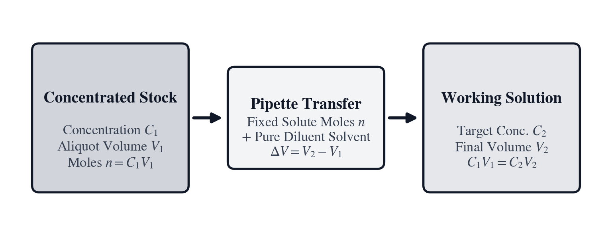

Unit VI: Stoichiometry, Chemical Equilibrium & Wet-Lab Analytics
Chemistry begins with the physical impossibility of handling an individual molecule. An analytical chemist weighing a crystalline salt on a balance pan cannot isolate single ionic lattices or count discrete hydration waters with mechanical tweezers. Yet chemical reactions proceed between precise, integer counts of reacting entities: two electrons transferred across an electrochemical interface, one proton exchanged, three equivalents of base neutralizing one equivalent of tricarboxylic acid. The analytical wet lab exists to bridge this divide—translating the macroscopic gravitational pull on a powder into an exact tally of reacting chemical species, and converting continuous optical attenuation into the discrete molar concentration of dissolved proteins.
In September 1860, at the First International Congress of Chemists in Karlsruhe, Germany, the Italian chemist Stanislao Cannizzaro distributed a printed pamphlet reviving the 1811 molecular hypothesis of his countryman Amedeo Avogadro. Equal volumes of gases at the same temperature and pressure contain equal numbers of molecules, and elemental gases such as hydrogen, nitrogen, and oxygen travel as diatomic pairs (\(\text{H}_2, \text{N}_2, \text{O}_2\)). Every chemical reaction proceeds between discrete integer counts of atoms and molecules. When citric acid neutralizes sodium bicarbonate in aqueous solution (\(\text{C}_6\text{H}_8\text{O}_7 + 3\,\text{NaHCO}_3 \longrightarrow \text{Na}_3\text{C}_6\text{H}_5\text{O}_7 + 3\,\text{H}_2\text{O} + 3\,\text{CO}_2\uparrow\)), one molecule of citric acid reacts with three molecules of sodium bicarbonate. Yet individual molecules measure roughly a nanometer across and weigh on the order of \(10^{-22}\text{ grams}\). By defining the mole (\(\text{mol}\)) as \(N_A = 6.02214076 \times 10^{23}\) elementary entities, Avogadro and Cannizzaro built the stoichiometric bridge connecting integer chemical formulas to macroscopic gram masses weighed on an analytical balance and dissolved to known Molarity or diluted across volumetric glassware.
Half a century later in 1909 at the Carlsberg Laboratory in Copenhagen, Danish biochemist Søren Peder Lauritz Sørensen investigated how aqueous hydrogen-ion concentration governs the catalytic speed of malt and yeast enzymes during brewing. Because free proton concentrations \([\text{H}^+]\) in water span fourteen orders of magnitude—from \(1.0\text{ mol/L}\) in concentrated mineral acid down to \(10^{-14}\text{ mol/L}\) in caustic alkali—plotting reaction rates against raw negative powers of ten obscured biochemical comparisons. Sørensen introduced the pondus hydrogenii scale, compressing exponential proton activity through the negative base-ten logarithm \(\text{pH} = -\log_{10}[\text{H}^+]\). Building on Sørensen's notation and Lawrence J. Henderson's 1908 study of carbonic-acid equilibria in blood plasma, Danish physician Karl Albert Hasselbalch cast the weak-acid dissociation law into logarithmic form in 1916. Together they established the Henderson–Hasselbalch buffer equation, which pairs with volumetric titration stoichiometry at the wet-lab bench. Across domains, the Henderson–Hasselbalch logarithmic equilibrium \(\text{pH} = \text{p}K_a + \log_{10}([\text{A}^-]/[\text{HA}])\) shares its exact mathematical structure with Walther Nernst's electrochemical cell potential (\(E = E^\circ - (0.05916/n_e)\log_{10} Q\)) and with the decibel gain and power ratios of Unit V.
To count dissolved biomolecules without consuming or destroying the sample, German physicist August Beer proved in 1852 that monochromatic light traversing an absorbing solution attenuates exponentially with both solute concentration and optical path length, uniting Pierre Bouguer and Johann Heinrich Lambert's earlier absorption laws into the Beer–Lambert spectrophotometric equation. Inside a quartz cuvette at \(280\text{ nm}\), aromatic tryptophan and tyrosine side chains cast a quantitative optical shadow proportional to protein molarity—obeying the same base-ten logarithmic attenuation law (\(A = -\log_{10}(I/I_0) = \varepsilon b c\)) that governs neutral-density camera filters in Unit IV and RF path loss in Unit V. Rounding out the physical-chemistry bench, the ideal gas equation, J. Willard Gibbs's 1876 free-energy criterion for reaction spontaneity, Walther Nernst's 1889 electrochemical potential, Svante Arrhenius's 1889 activation-energy rate law, calorimetry, and Theodor Svedberg's Nobel-winning centrifugal sedimentation equations link microscopic molecular energetics to laboratory instruments.
The applied disciplines of this volume follow a continuous progression through physical phenomena: 1. In Unit I (SC-35 Geomatics & Celestial Navigation), we mapped macroscopic geographic space across spherical terrain, tracking geodetic coordinates, magnetic declination, and astronomical lines of position. 2. In Unit II (SC-14 Electrical Power & Industrial Trades), we channeled thousands of watts of alternating current through industrial conductors, bent steel conduit raceways, and sized high-pressure hydraulic valves. 3. In Unit III (SC-16 Digital Systems & Cyber Operations), we compressed those electrical voltages into nanosecond digital pulses, navigating microcontroller timer prescalers, bitwise masks, and cryptographic hash functions. 4. In Unit IV (SC-24 Cinema & Sound Acoustics), we modulated electromagnetic and acoustic energy into visual frames, optical depth-of-field envelopes, sound pressure decibels, and resonant room reverberations. 5. In Unit V (SC-50 RF & Spectrum Management), we pushed electromagnetic frequencies into gigahertz wavelengths, conquering standing wave reflections, knife-edge mountain diffraction, and thermal noise down to the absolute Shannon limit.
Now, in Unit VI (SC-60 Chemistry & Wet Lab), we cross the threshold from macroscopic fields and guided waves into the atomic and molecular architecture of matter itself. The radio-frequency photons that spanned meters and centimeters in Unit V carry quantum energies on the order of nano-electronvolts (\(E = hf \approx 10^{-7}\text{ eV}\))—far too feeble to alter atomic structures. In this unit, photon wavelengths contract by eight orders of magnitude into the ultraviolet and visible spectrum (\(\lambda \approx 200\text{--}800\text{ nm}\)), where individual photon energies surge into the electronvolt regime (\(E \approx 1.5\text{--}6.2\text{ eV}\)). At these energetic scales, light directly interacts with the valence electrons of molecules, promoting electrons between bonding and anti-bonding molecular orbitals, exciting aromatic chromophores, and driving chemical reactions across thermal activation barriers.
The analytical wet lab presents three foundational operational dilemmas: - Counting Molecules by Weighing Grams: A chemist cannot count individual molecules one by one with tweezers. Instead, an analytical balance weighing powder to a tenth of a milligram serves as a molecular counter. If the molar mass calculation ignores waters of crystallization in a hydrated crystal, every stoichiometric ratio that follows will be fatally skewed. - Acid-Base Regulation and Physiological Limits: In human blood and mammalian cell culture, physiological pH is poised precariously at \(7.40\). If the pH drifts downward by just \(0.40\) units to \(7.00\) (severe acidemia) or upward to \(7.80\) (severe alkalemia), the altered electric charge on histidine and lysine residues destroys enzyme tertiary structures, denatures hemoglobin, precipitates metabolic collapse, and induces fatal cardiac arrhythmias within minutes. Conjugate acid-base buffers are the biochemical shock absorbers that protect life against catastrophic pH shifts. - The Pipetting Compound Error: When preparing standard curves or running serially diluted enzyme assays, every mechanical transfer introduces Gaussian volume uncertainty. Because relative dilution errors accumulate in quadrature as \(\sqrt{k}\), careless multi-step serial pipetting rapidly destroys analytical validity, whereas cutting a single direct aliquot from a gravimetrically calibrated primary stock preserves precision.
To solve these problems with speed, precision, and complete clarity, we place the SC-60 Chemistry & Wet Lab RPN Calculator in the hands of senior analytical chemist Dr. Evelyn Cross and junior researcher Lucas Perez across three deeply technical, narrative chapters:
- Chapter 16: Weighing the Buffer and Cutting the Stock Aliquot masters chemical formula parsing, standard atomic weights, hydrate crystallization conversions, volumetric solution molarity (\(C = n/V\)), stock aliquot dilution conservation (\(C_1 V_1 = C_2 V_2\)), micropipette error propagation (\(\sigma_{C_k}/C_k \approx \sqrt{k}(\sigma_V/V)\)), and cryoscopic freezing point depression (\(\Delta T_f = i K_f m\)).
- Chapter 17: Holding pH 7.40 Against an Acid Spike explores water autoionization (\(K_w\)), Sørensen logarithmic acidity, weak-acid dissociation (\(K_a\)), the Henderson–Hasselbalch conjugate equilibrium equation, Van Slyke buffer capacity (\(\beta\)), acid/base spike shifts, and volumetric titration stoichiometry.
- Chapter 18: Reading Protein Concentration Through a Quartz Cuvette quantifies exponential light extinction via the Beer–Lambert law (\(A = \varepsilon b c\)), aromatic amino acid UV extinction coefficients at \(280\text{ nm}\), spectrophotometer stray-light linearity limits, Gibbs free energy (\(\Delta G^\circ = -RT\ln K_{\text{eq}}\)), Nernst electrochemical potentials, Arrhenius activation barriers (\(k = A e^{-E_a/RT}\)), and Relative Centrifugal Force (\(\text{RCF} = 1.118 \times 10^{-5} r_{\text{cm}}\text{RPM}^2\)).
By harnessing the 4-register RPN stack, every calculation—from the gravimetric mass of dry crystals to the logarithmic absorbance of light and the centrifugal separation of macromolecules—becomes an exact, reproducible laboratory procedure.
Chapter 16: Weighing the Buffer and Cutting the Stock Aliquot
Late on a rainy Tuesday evening, the analytical biochemistry laboratory at the Institute for Molecular Therapeutics is bathed in the clean, shadowless glow of overhead LED fixtures. Through the thick glass partition of the reagent preparation suite, the rhythmic, low-frequency hum of a multi-position magnetic stirrer vibrates against the granite vibration-isolation bench. A row of precision borosilicate volumetric flasks, each bearing a certified Class A calibration line etched into its slender neck, stands drying in an inverted peg rack. Beside an electronic analytical balance encased in a transparent glass draft shield, senior analytical chemist Dr. Evelyn Cross checks the calibration log. Across the bench, junior biochemist Lucas Perez uncaps a bottle of analytical-grade crystalline salt, preparing to weigh out reagents for tomorrow morning's high-throughput enzymatic inhibition screen.
In high-throughput screening, experimental reproducibility hinges upon an unyielding truth: enzymes do not respond to ounces, grams, or milliliters. Biological catalysts respond strictly to the absolute number of substrate and cofactor molecules dissolved per unit volume. If Lucas weighs out a crystalline reagent assuming it is anhydrous when the bottle contains a heptahydrate, the resulting solution will contain only fifty-three percent of the intended solute molecules. The remaining forty-seven percent of the weighed mass will be inert water molecules trapped inside the salt's crystal lattice. To bridge the macroscopic world of balance pans and volumetric flasks with the microscopic world of stoichiometric chemical reactions, the analytical chemist relies on the universal currency of chemistry: the mole.
Atomic Weights, Formula Stoichiometry, and Hydrated Crystals
In everyday speech, people talk of mass and weight interchangeably. In the wet lab, however, the analytical balance does not measure molecules; it measures the gravitational force exerted on an aggregate of atoms. To convert that macroscopic mass into a precise count of reacting chemical entities, the chemist requires the exact molar mass of the compound.
IUPAC Standard Atomic Weights and Gravimetric Mole Conversion
The modern atomic weight scale is the culmination of more than two centuries of painstaking gravimetric research. Following John Dalton's 1803 atomic theory, the Swedish chemist Jöns Jacob Berzelius spent decades preparing ultra-pure compounds, determining the atomic weights of forty-five elements through gravimetric precipitation of silver halides. In the early twentieth century at Harvard University, Theodore William Richards refined these techniques to such extraordinary accuracy—discovering that lead derived from radioactive uranium decay possessed a measurably lower atomic weight than ordinary lead—that he was awarded the 1914 Nobel Prize in Chemistry, the first ever presented to an American scientist.
Today, the Commission on Isotopic Abundances and Atomic Weights (CIAAW) of the International Union of Pure and Applied Chemistry (IUPAC) continuously evaluates the natural terrestrial isotopic distribution of each element. On May 20, 2019, the international metric system enacted an epochal redefinition: the mole (\(\text{mol}\)) is no longer defined in terms of the mass of carbon-12. Instead, the mole is defined as containing exactly:
where \(N_A\) is the exact Avogadro constant. The standard atomic weight \(A_r(\text{E})\) of an element \(\text{E}\) is the abundance-weighted average of the atomic masses of its stable terrestrial isotopes relative to one-twelfth the mass of an unbound carbon-12 atom at rest (\(1\text{ Da} = 1\text{ u} = 1.66053906660 \times 10^{-24}\text{ g}\)):
where \(f_j\) is the mole fraction of isotope \(j\) and \(m_{r,j}\) is its relative atomic mass.
The molar mass \(M\) of any chemical compound is the sum of the standard atomic weights of its constituent elements, multiplied by their stoichiometric subscripts in the empirical formula, expressed in grams per mole (\(\text{g/mol}\)):
Eq. 16.1 — Gravimetric Solute Mass and Molar Mass Summation $\(M = \sum_i n_i \cdot A_r(i) \quad \left(\frac{\text{g}}{\text{mol}}\right)\)$ $\(W = n \cdot M \iff n = \frac{W}{M}\)$
where \(n_i\) is the stoichiometric count of atom \(i\) in the molecular formula, \(A_r(i)\) is the IUPAC standard atomic weight of that element, \(n\) is the total number of moles of compound, and \(W\) is the gravimetric mass in grams required on the analytical balance.
| Element | Symbol | Atomic Number $ | IUPAC Standard Atomic Weight $ (g/mol) | Dominant Natural Isotopes |
|---|---|---|---|---|
| Hydrogen | H | 1 | 1.0080 | ¹H (99.9885%), ²H (0.0115%) |
| Carbon | C | 6 | 12.011 | ¹²C (98.93%), ¹³C (1.07%) |
| Nitrogen | N | 7 | 14.007 | ¹⁴N (99.636%), ¹⁵N (0.364%) |
| Oxygen | O | 8 | 15.999 | ¹⁶O (99.757%), ¹⁸O (0.205%) |
| Sodium | Na | 11 | 22.990 | ²³Na (100%) |
| Magnesium | Mg | 12 | 24.305 | ²⁴Mg (78.99%), ²⁵Mg (10.00%), ²⁶Mg (11.01%) |
| Phosphorus | P | 15 | 30.974 | ³¹P (100%) |
| Sulfur | S | 16 | 32.065 | ³²S (94.99%), ³⁴S (4.25%) |
| Chlorine | Cl | 17 | 35.453 | ³⁵Cl (75.76%), ³⁷Cl (24.24%) |
| Potassium | K | 19 | 39.098 | ³⁹K (93.258%), ⁴¹K (6.730%) |
When calculating molar mass on the SC-60, the internal formula parser evaluates molecular formulas with full 12-digit IEEE 754 precision: - Sodium Chloride (\(\text{NaCl}\)): \(M = 22.989769 + 35.453 = \mathbf{58.4428\text{ g/mol}} \approx \mathbf{58.44\text{ g/mol}}\). - Tris Base (\(\text{C}_4\text{H}_{11}\text{NO}_3\), tris(hydroxymethyl)aminomethane): \(M = 4(12.011) + 11(1.008) + 14.007 + 3(15.999) = 48.044 + 11.088 + 14.007 + 47.997 = \mathbf{121.136\text{ g/mol}}\). - Sodium Dihydrogen Phosphate (\(\text{NaH}_2\text{PO}_4\)): \(M = 22.990 + 2(1.008) + 30.974 + 4(15.999) = \mathbf{119.976\text{ g/mol}}\).
When weighing reagents on an analytical balance, Dr. Cross reminds Lucas that high precision requires accounting for environmental factors: 1. Glass Draft Shields: At sub-milligram sensitivities, thermal air convection currents and HVAC breezes exert aerodynamic lift on the balance pan. The draft shield doors must remain closed during reading. 2. Static Dissipation: Dry plastic spatulas and glass weighing boats accumulate electrostatic charges that induce repulsive forces against the balance chassis, causing values to drift. Grounding the balance or using an anti-static ionizing blower stabilizes the readout. 3. Air Buoyancy Correction: In primary gravimetric standardization, the upward buoyant force exerted by ambient air on low-density organic crystals (\(d \approx 1.2\text{ g/cm}^3\)) compared to dense stainless-steel calibration weights (\(d \approx 8.0\text{ g/cm}^3\)) causes an apparent weight loss: $\(W_{\text{true}} = W_{\text{apparent}} \left( 1 + \frac{\rho_{\text{air}}}{\rho_{\text{sample}}} - \frac{\rho_{\text{air}}}{\rho_{\text{weights}}} \right)\)$ For air density \(\rho_{\text{air}} \approx 0.0012\text{ g/cm}^3\), this buoyancy correction adds roughly \(+0.1\%\) to the measured mass of light organic powders.
To appreciate the level of gravimetric rigor required on the analytical balance, consider Theodore William Richards's atomic weight determinations. Richards realized that atmospheric buoyancy fundamentally perturbs gravimetric measurements. Because an analytical balance compares the gravitational force on a sample against internal or external reference weights, both the sample and the weights displace a volume of ambient air equal to their physical mass divided by their density.
Applying Archimedes' principle, the buoyant force exerted by air of density \(\rho_{\text{air}}\) on an object of mass \(m\) and density \(\rho\) is \(F_{\text{buoyant}} = m \frac{\rho_{\text{air}}}{\rho} g\). The balance beam or electromagnetic force-restoration load cell registers the net downward force:
When the balance display indicates an apparent mass \(W_{\text{apparent}}\) calibrated against reference stainless steel weights of density \(\rho_{\text{weights}} \approx 8.00\text{ g/cm}^3\), the true vacuum mass \(W_{\text{true}}\) of the chemical sample is given by equating the net forces:
Under standard laboratory conditions (\(T = 20^\circ\text{C}\), barometric pressure \(P = 101.325\text{ kPa}\), relative humidity \(50\%\)), the density of moist air is approximately \(\rho_{\text{air}} \approx 0.00120\text{ g/cm}^3\). Expanding the denominator via the first-order binomial series \((1 - x)^{-1} \approx 1 + x\):
For dense inorganic salts like sodium chloride (\(\rho_{\text{NaCl}} \approx 2.165\text{ g/cm}^3\)), the buoyancy correction is:
For fluffy organic buffer powders such as Tris base (\(\rho_{\text{Tris}} \approx 1.35\text{ g/cm}^3\)), the correction climbs to:
In primary analytical standards and quantitative trace pharmacology, ignoring air buoyancy introduces an error approaching one-tenth of a percent—an error ten times larger than the readability of a six-figure analytical microbalance.
Elemental Mass Fractions and Waters of Crystallization in Hydrates
Many inorganic salts crystallize from aqueous solution by incorporating a fixed stoichiometric ratio of water molecules into their solid crystal lattice. These incorporated water molecules are termed waters of crystallization or waters of hydration.
In crystal chemistry, water molecules coordinate directly to the central metal cation through lone-pair coordinate covalent bonds, or form an extensive hydrogen-bonding bridge network between anions. For example, in copper(II) sulfate pentahydrate (\(\text{CuSO}_4\cdot 5\text{H}_2\text{O}\)), four water molecules coordinate directly to the \(\text{Cu}^{2+}\) ion in an octahedral coordination geometry, while the fifth water molecule is held purely by hydrogen bonds bridging the sulfate oxygen atoms and coordinated waters.
When calculating the elemental composition of a compound or the mass fraction of active anhydrous salt in a commercial bottle, the chemist applies mass percentage partitioning:
Eq. 16.2 — Elemental Mass Percentage and Hydrate Molar Mass $\(\%w/w(i) = \frac{n_i \cdot A_r(i)}{M_{\text{total}}} \times 100\%\)$ $\(M_{\text{hydrate}} = M_{\text{anhydrous}} + n_{\text{H}_2\text{O}} \cdot M(\text{H}_2\text{O})\)$ $\(f_{\text{active}} = \frac{M_{\text{anhydrous}}}{M_{\text{hydrate}}}\)$
where \(M(\text{H}_2\text{O}) = 2(1.008) + 15.999 = \mathbf{18.015\text{ g/mol}}\), \(n_{\text{H}_2\text{O}}\) is the integer hydration number, and \(f_{\text{active}}\) is the fraction of total bottle weight that represents active anhydrous salt.
Consider disodium hydrogen phosphate, one of the most widely used biological buffer salts: - Anhydrous Form (\(\text{Na}_2\text{HPO}_4\)): $\(M_{\text{anhydrous}} = 2(22.990) + 1.008 + 30.974 + 4(15.999) = 45.980 + 1.008 + 30.974 + 63.996 = \mathbf{141.958\text{ g/mol}}\)$ - Heptahydrate Form (\(\text{Na}_2\text{HPO}_4\cdot 7\text{H}_2\text{O}\)): $\(M_{\text{hydrate}} = 141.958 + 7(18.015) = 141.958 + 126.105 = \mathbf{268.063\text{ g/mol}}\)$ - Active Fraction: $\(f_{\text{active}} = \frac{141.958}{268.063} \approx \mathbf{0.52957} \quad (52.96\%)\)$
Nearly half (\(47.04\%\)) of the weight in a bottle of disodium phosphate heptahydrate is crystalline water. If a protocol specifies \(14.196\text{ grams}\) of \(\text{Na}_2\text{HPO}_4\) (representing \(0.100\text{ mol}\) of phosphate), and a researcher weighs out \(14.196\text{ grams}\) of the heptahydrate, the resulting solution will contain only:
The buffer concentration will be nearly forty-seven percent weaker than intended. To deliver \(0.100\text{ moles}\) of phosphate from the heptahydrate stock, the chemist must scale the balance mass upward by the hydration factor:
Dr. Cross points out another critical laboratory phenomenon: efflorescence and deliquescence: - Efflorescent Salts: Certain hydrates (such as \(\text{Na}_2\text{SO}_4\cdot 10\text{H}_2\text{O}\)) have an internal water vapor pressure higher than the partial pressure of water vapor in dry air. When left in an unsealed container, they spontaneously lose crystal water to the air, turning into a chalky anhydrous powder of variable molecular weight. - Deliquescent Salts: Strongly hygroscopic salts (such as anhydrous \(\text{CaCl}_2\) or \(\text{MgCl}_2\)) have an extremely low water vapor pressure. When exposed to humid air, they absorb atmospheric moisture so aggressively that they dissolve into their own absorbed water, forming a concentrated liquid puddle.
To guarantee stoichiometric accuracy, analytical labs store crystalline hydrate standards in tightly sealed desiccators over activated silica gel or anhydrous phosphorus pentoxide, or purchase pre-standardized liquid concentrates.
Solution Molarity, Stock Dilutions, and Serial Pipetting Error
Once the dry salts are weighed, they must be dissolved in an exact volume of solvent (typically high-purity deionized water, Milli-Q grade, \(18.2\text{ M}\Omega\cdot\text{cm}\) resistivity) to create a solution of known chemical concentration.
Dissolving Dry Reagents to Target Molarity
In chemistry, concentration is expressed in several distinct units, each optimized for specific thermodynamic or practical applications:
- Molarity (\(C\) or \(M\), \(\text{mol/L}\)): The number of moles of dissolved solute per liter of total solution: $\(C = \frac{n}{V_{\text{solution}}}\quad \left(\frac{\text{mol}}{\text{L}}\right)\)$ Molarity is the universal standard for wet-lab stoichiometry because chemical reactions occur on volumetric aliquot transfers. However, because liquids expand and contract with temperature (\(\Delta V / V \approx 0.02\% / ^\circ\text{C}\) for water), molarity varies slightly with laboratory temperature.
- Molality (\(m\), \(\text{mol/kg}\)): The number of moles of solute per kilogram of pure solvent: $\(m = \frac{n}{m_{\text{solvent}}}\quad \left(\frac{\text{mol}}{\text{kg}}\right)\)$ Because mass is invariant with temperature and pressure, molality is the rigorous thermodynamic unit for colligative properties (freezing point depression and boiling point elevation).
- Normality (\(N\), \(\text{equiv/L}\)): The number of equivalents of reactive species (protons \(\text{H}^+\) or electrons \(e^-\)) per liter of solution: $\(N = n_{\text{eq}} \cdot C\)$ For monoprotic hydrochloric acid (\(\text{HCl}\)), \(1\text{ M} = 1\text{ N}\). For diprotic sulfuric acid (\(\text{H}_2\text{SO}_4\)), \(1\text{ M} = 2\text{ N}\).
- Mass Concentration (\(\rho\) or \(C_m\), \(\text{g/L}\) or \(\text{mg/mL}\)): The mass of solute divided by solution volume: $\(C_m = \frac{W}{V} = C \cdot M\)$
The fundamental governing relation for preparing volumetric solutions from dry reagents is:
Eq. 16.3 — Volumetric Solution Molarity and Solute Mass $\(C = \frac{n}{V} = \frac{W}{M \cdot V} \iff W = C \cdot V \cdot M\)$ $\(n = C \cdot V\)$
where \(C\) is target molarity (\(\text{mol/L}\)), \(V\) is target volume (\(\text{L}\)), \(M\) is solute molar mass (\(\text{g/mol}\)), and \(W\) is required balance weight (\(\text{g}\)).
Volumetric glassware precision dictates the accuracy of Molarity: - Class A Borosilicate Volumetric Flasks: Manufactured to strict ASTM E288 / ISO 1042 specifications, calibrated "To Contain" (TC or IN) at \(20^\circ\text{C}\). A \(250.0\text{ mL}\) Class A volumetric flask has a tolerance of \(\pm 0.12\text{ mL}\) (\(\pm 0.048\%\)). A \(1000.0\text{ mL}\) flask has a tolerance of \(\pm 0.30\text{ mL}\) (\(\pm 0.030\%\)). - Meniscus Physics: Water in a clean glass neck forms a concave meniscus due to adhesive surface tension forces between polar water molecules and hydrophilic silicate glass. To avoid parallax errors, the chemist's eye must align horizontally with the calibration ring, bringing the absolute bottom of the curved liquid meniscus tangent to the top edge of the etched line. - Dissolution Technique: Never add dry salt directly to a volumetric flask filled to the line. Adding solid solute increases liquid volume, and undissolved crystals trapped in the narrow neck dissolve sluggishly. The correct procedure is: 1. Transfer the weighed salt into a beaker containing roughly \(60\text{--}70\%\) of the target solvent volume. 2. Stir on a magnetic plate until all crystals are completely dissolved. 3. Quantitatively transfer the solution into the volumetric flask using a glass funnel, rinsing the beaker and funnel three times with deionized water into the flask. 4. Allow the solution to equilibrate to \(20^\circ\text{C}\) (dissolution can be endothermic or exothermic). 5. Bring to the mark using a fine dropper for the final few drops, stopper the flask, and invert twenty times to ensure complete homogenization.
Volumetric Glassware Thermal Expansion and Solvent Density
In high-precision quantitative analysis, another physical phenomenon couples volumetric measurements to ambient laboratory conditions: the thermal expansion of liquids.
According to the Kell formulation, the density of pure liquid water reaches its maximum at \(3.984^\circ\text{C}\) (\(\rho_{\max} = 0.999975\text{ g/cm}^3\)) and diminishes steadily as temperature rises: - At \(4.0^\circ\text{C}\): \(\rho = 0.99997\text{ g/mL}\) - At \(20.0^\circ\text{C}\) (Class A glassware calibration standard): \(\rho = 0.99820\text{ g/mL}\) - At \(25.0^\circ\text{C}\) (standard ambient laboratory temperature): \(\rho = 0.99704\text{ g/mL}\) - At \(37.0^\circ\text{C}\) (physiological incubation temperature): \(\rho = 0.99333\text{ g/mL}\)
The volumetric thermal expansion coefficient of water at room temperature is approximately \(\beta \approx 2.07 \times 10^{-4}\text{ K}^{-1}\). Meanwhile, borosilicate glass (Pyrex / Duran) has an extraordinarily low linear thermal expansion coefficient of \(\alpha_{\text{glass}} \approx 3.3 \times 10^{-6}\text{ K}^{-1}\), giving a volumetric expansion of \(\gamma_{\text{glass}} \approx 3 \alpha_{\text{glass}} \approx 1.0 \times 10^{-5}\text{ K}^{-1}\).
Because water expands twenty times faster than the borosilicate flask enclosing it (\(\beta_{\text{water}} \gg \gamma_{\text{glass}}\)), filling a \(1000.0\text{ mL}\) Class A volumetric flask to the mark at \(25.0^\circ\text{C}\) contains:
The actual volume of solvent at standard temperature is \(1.16\text{ mL}\) less than the nominal volume. This temperature discrepancy introduces a systematic concentration error of \(+0.12\%\). For carrier-grade pharmaceutical assays, analytical protocols mandate allowing all volumetric flasks and wash carboys to equilibrate to exactly \(20.0^\circ\text{C}\) in a temperature-controlled water bath before making final meniscus adjustments to the mark.
Solute Mole Conservation and Serial Dilution Error Propagation
Weighing small milligram quantities of dry buffer salts for every daily assay consumes hours of setup time and introduces severe balance error when weighing below \(10\text{ mg}\). Instead, analytical labs maintain concentrated, sterile stock solutions (such as \(5.0\text{ M}\) \(\text{NaCl}\), \(1.0\text{ M}\) \(\text{MgCl}_2\), or \(2.0\text{ M}\) Tris-HCl) and cut working aliquots by dilution.

When an aliquot volume \(V_1\) of concentrated stock solution at concentration \(C_1\) is diluted with pure solvent to a final working volume \(V_2\), the total number of dissolved solute moles remains strictly constant. Because pure water contributes zero solute moles, the solute moles in the stock aliquot must equal the solute moles in the final mixture:
Eq. 16.4 — Conservation of Solute Moles in Stock Dilution $\(C_1 V_1 = C_2 V_2 \iff V_1 = \frac{C_2 V_2}{C_1}\)$ $\(V_{\text{diluent}} = V_2 - V_1\)$
In this bilateral conservation equation: - Concentrations \(C_1\) and \(C_2\) can be expressed in any identical units (\(\text{M}, \text{mM}, \mu\text{M}, \text{g/L}\), or \(\text{mg/mL}\)). - Volumes \(V_1\) and \(V_2\) can be expressed in any identical units (\(\text{L}, \text{mL}\), or \(\mu\text{L}\)). - The diluent volume \(V_{\text{diluent}} = V_2 - V_1\) assumes ideal volume additivity (valid for dilute aqueous buffers where excess volume of mixing \(\Delta V_{\text{mix}} \approx 0\)).
Serial Dilutions and Gaussian Error Propagation
When a biological assay requires testing an inhibitor across four to six orders of magnitude of concentration (for example, from \(100\ \mu\text{M}\) down to \(1\text{ nM}\) to establish an \(\text{IC}_{50}\) dose-response curve), pipetting a single sub-microliter aliquot directly from the stock is physically impossible. A micropipette cannot reliably dispense \(0.001\ \mu\text{L}\).
Instead, the technician performs a serial dilution: sequentially transferring an aliquot from each tube into the next tube in a row of vessels containing diluent. In a 10-fold serial dilution, \(100\ \mu\text{L}\) of solution is transferred into \(900\ \mu\text{L}\) of diluent across \(k\) tubes, producing dilution factors of \(10^{-1}, 10^{-2}, \dots, 10^{-k}\).
Why do analytical chemists caution against excessive serial dilution steps? Consider the mathematical propagation of measurement uncertainty. Let each pipetting step have an independent relative volume uncertainty \(\sigma_V / V\) (governed by Gaussian random error in the micropipette mechanism, operator thumb technique, and liquid surface tension). The concentration at step \(k\) is given by the product:
Taking the natural logarithm of both sides:
Applying the variance formula for independent random variables (\(\sigma_{\ln x}^2 = \sigma_x^2 / x^2\)):
Assuming equal relative pipetting error at each stage and negligible stock uncertainty \(\sigma_{C_0} \approx 0\), the relative standard deviation of concentration compounds with step count \(k\):
Eq. 16.5 — Serial Pipetting Error Propagation $\(\frac{\sigma_{C_k}}{C_k} \approx \sqrt{k}\,\left(\frac{\sigma_V}{V}\right)\)$
A five-step serial dilution (\(k = 5\)) using an air-displacement micropipette with a \(\pm 2.0\%\) dispensing uncertainty inflates the random concentration error to:
Even worse than random Gaussian error is systematic calibration bias. If the micropipette is uncalibrated and consistently under-delivers volume by just \(-3.0\%\), that bias compounds exponentially as \((0.97)^k\). After six serial transfers (\(k = 6\)):
The final assay well receives seventeen percent less compound than calculated. This is why analytical protocols mandate: 1. Always use a single direct stock aliquot ([C₁V₁]) whenever the required aliquot volume \(V_1\) is \(\ge 10\ \mu\text{L}\). 2. When serial dilutions are unavoidable, limit the step count \(k\) by using larger dilution ratios per step (\(1:100\) rather than two \(1:10\) steps). 3. Regularly calibrate micropipettes gravimetrically by dispensing ultra-pure water onto an analytical balance at known temperature.
Colligative Properties and Cryoscopic Freezing Point Depression
How can a chemist independently verify the total particle concentration of an unknown biological buffer without knowing its individual chemical components? The answer lies in colligative properties: physical properties of solutions that depend solely on the ratio of the number of dissolved solute particles to the number of solvent molecules, completely independent of the solute's chemical identity, mass, or electrical charge.
Colligative properties include vapor pressure lowering (Raoult's law), boiling point elevation (ebullioscopy), osmotic pressure (van 't Hoff's law), and freezing point depression (cryoscopy). In wet labs and clinical pathology, freezing point depression osmometry is the gold standard for measuring total solute concentration.
Thermodynamic Derivation of Freezing Point Depression
In thermodynamic equilibrium, the chemical potential of the liquid solvent \(\mu_{\text{liquid}}\) must equal the chemical potential of the pure solid ice phase \(\mu_{\text{solid}}\). According to Raoult's law for ideal dilute solutions, dissolving a solute lowers the mole fraction of the solvent (\(x_{\text{solvent}} = 1 - x_{\text{solute}} < 1\)). The chemical potential of the solvent in solution is:
Because \(x_{\text{solvent}} < 1\), \(\ln x_{\text{solvent}}\) is negative, which depresses the chemical potential of the liquid phase below that of the pure solvent. Consequently, the liquid phase remains stable at temperatures below the normal freezing point \(T_f^\circ = 273.15\text{ K}\) (\(0.00^\circ\text{C}\)). The solid and liquid curves intersect at a lower temperature \(T_f\), giving the freezing point depression:
For dilute aqueous solutions, the solute mole fraction relates to molality \(m\) (moles of solute per kilogram of water) by \(x_{\text{solute}} \approx m \cdot M_{\text{water}} / 1000\). Substituting this gives the universal cryoscopic relation:
Eq. 16.6 — Colligative Freezing Point Depression $\(\Delta T_f = i \cdot K_f \cdot m = K_f \cdot \xi_{\text{osm}}\)$ $\(K_f = \frac{R (T_f^\circ)^2 M_{\text{solvent}}}{1000 \cdot \Delta H_{\text{fusion}}}\)$ $\(\xi_{\text{osm}} = i \cdot m = \frac{\Delta T_f}{K_f}\)$
where: - \(\Delta T_f\) is the freezing point depression in degrees Celsius or Kelvin (\(\Delta T_f \ge 0\)). - \(K_f\) is the cryoscopic constant of the solvent. For pure water, with latent heat of fusion \(\Delta H_{\text{fusion}} = 6008\text{ J/mol}\) and \(T_f^\circ = 273.15\text{ K}\): $\(K_f = \frac{8.31446 \times (273.15)^2 \times 18.015}{1000 \times 6008} \approx \mathbf{1.858\text{ K}\cdot\text{kg/mol}} \approx \mathbf{1.86^\circ\text{C}\cdot\text{kg/mol}}\)$ - \(m\) is the molality of the solute in moles per kilogram of solvent (\(\text{mol/kg}\)). - \(i\) is the dimensionless van 't Hoff factor, representing the average number of discrete ions or particles formed per formula unit of solute in solution. - \(\xi_{\text{osm}} = i \cdot m\) is the osmolality in osmodes per kilogram of solvent (\(\text{Osm/kg}\) or \(\text{mOsm/kg}\)).
| Solute | Chemical Formula | Ideal Van 't Hoff Factor \(i\) (ideal) | Measured \(i\) (0.05 m) | Measured \(i\) (0.50 m) | Notes |
|---|---|---|---|---|---|
| Glucose / Sucrose | C₆H₁₂O₆ | 1 | 1.00 | 1.01 | Non-electrolyte, zero dissociation |
| Sodium Chloride | NaCl → Na⁺ + Cl⁻ | 2 | 1.90 | 1.81 | Inter-ionic Debye-Hückel attraction |
| Magnesium Chloride | MgCl₂ → Mg²⁺ + 2 Cl⁻ | 3 | 2.70 | 2.55 | Multivalent ion pairing |
| Sodium Phosphate | Na₂HPO₄ → 2 Na⁺ + HPO₄²⁻ | 3 | 2.65 | 2.32 | Divalent phosphate association |
In non-electrolyte solutions such as glucose, glycerol, or urea, molecules remain intact (\(i = 1\)). In strong electrolytes such as \(\text{NaCl}\), the crystal dissociates into two ions (\(\text{Na}^+\) and \(\text{Cl}^-\)), so ideally \(i = 2\). At real concentrations, however, inter-ionic electrostatic attractions cause transient ion pairs to form, reducing the effective van 't Hoff factor slightly below its theoretical integer value (\(i \approx 1.86\) for \(0.15\text{ M}\) physiological saline).
In biological wet labs, osmolality is vital: - Physiological Osmolality: Mammalian blood plasma and cytoplasm have an osmolality of strictly \(290\text{ mOsm/kg}\) (\(\pm 10\text{ mOsm/kg}\)), which corresponds to a freezing point depression of: $\(\Delta T_f = 1.86^\circ\text{C}\cdot\text{kg/mol} \times 0.290\text{ Osm/kg} = \mathbf{0.539^\circ\text{C}} \implies T_f = \mathbf{-0.539^\circ\text{C}}\)$ - Osmotic Shock: If cells are placed in a hypotonic buffer (\(< 250\text{ mOsm/kg}\)), osmotic pressure forces water across the lipid bilayer into the cells, causing osmotic swelling and explosive membrane lysis. Conversely, placing cells in a hypertonic buffer (\(> 350\text{ mOsm/kg}\)) draws water out, dehydrating the cytoplasm and causing crenation and cell death.
The Debye-Hückel Limiting Law and Non-Ideal Osmotic Coefficients
Why does the experimental van 't Hoff factor \(i\) of a strong electrolyte like sodium chloride fall below its theoretical integer value of \(2.00\)? In 1923, Peter Debye and Erich Hückel developed the thermodynamic theory of electrolyte solutions, demonstrating that ions in water do not move as completely independent entities.
Because of electrostatic Coulombic attractions, every positive cation (\(\text{Na}^+\)) is surrounded, on time average, by a spherical cloud or "atmosphere" containing a slight excess of negative anions (\(\text{Cl}^-\)), and vice versa. This ionic atmosphere shields the central ion and stabilizes it electrostatically, lowering the chemical potential and free energy of the solution below that of an ideal gas of point charges.
The extent of this electrostatic interaction depends on the ionic strength \(I\) of the solution:
where \(c_k\) is the molar concentration of ion \(k\) and \(z_k\) is its integer ionic charge valence. For a \(1:1\) electrolyte like \(\text{NaCl}\) (\(z_+ = +1, z_- = -1\)), ionic strength equals molarity (\(I = C\)). For a \(2:1\) electrolyte like \(\text{MgCl}_2\) (\(z_+ = +2, z_- = -1\)):
The ionic strength of a \(0.200\text{ M}\) \(\text{MgCl}_2\) solution is \(0.600\text{ M}\)—three times its molar concentration.
The Debye-Hückel limiting law relates the mean ionic activity coefficient \(\gamma_\pm\) to ionic strength:
where \(A \approx 0.509\text{ L}^{1/2}\text{mol}^{-1/2}\) for water at \(25^\circ\text{C}\). This thermodynamic non-ideality lowers the osmotic coefficient \(\phi = \xi_{\text{measured}} / \xi_{\text{ideal}}\). In physiological saline (\(0.154\text{ M}\) \(\text{NaCl}\)), the osmotic coefficient is \(\phi \approx 0.93\), which scales the ideal van 't Hoff factor from \(2.00\) down to:
This explains why osmometry measurements on biological buffers yield freezing point depressions slightly smaller than those predicted by unshielded integer ion counts.
Weighing Dry Salts and Solving Dilutions on the SC-60
At the analytical balance, Dr. Cross and Lucas Perez bring these molecular relationships into practice on the SC-60 Chemistry & Wet Lab calculator.
Parsing Chemical Formulas and Weighing Crystalline Reagents
At the analytical balance, the biochemist first computes the required moles of \(\text{NaCl}\) (\(n = 0.50\text{ M} \times 0.250\text{ L} = 0.125\text{ mol}\) via [f] [RXN]), enters Formula Mode (FML: _) to parse \(\text{NaCl}\) (\(58.440\text{ g/mol}\)), and multiplies \(n \times M\) ([×] or [W] in [MW]) to find the dry gram weight \(W_{\text{NaCl}}\). Next, the biochemist computes the moles of Tris (\(n = 0.10\text{ M} \times 0.150\text{ L} = 0.015\text{ mol}\)), parses \(\text{C}_4\text{H}_{11}\text{NO}_3\) (C4H11NO3), and computes \(W_{\text{Tris}}\):
| Keystroke | Register T | Register Z | Register Y | Register X | What Happens on the Stack |
|---|---|---|---|---|---|
0.5 [ENTER] 0.25 [f] [RXN] |
\(0\) | \(0\) | \(0\) | \(0.125\) | Compute \(\text{NaCl}\) moles \(n = 0.50\text{ M} \times 0.250\text{ L} = 0.125\text{ mol}\) |
[MW] [FML] NaCl [FML] |
\(0\) | \(0\) | \(0.125\) | \(58.44\) | Parse \(\text{NaCl}\) molar mass \(M = 58.440\text{ g/mol}\); \(n = 0.125\text{ mol}\) in \(Y\) |
| [×] | \(0\) | \(0\) | \(0\) | \(7.305\) | Evaluate \(\text{NaCl}\) balance weight \(W_{\text{NaCl}} = 0.125 \times 58.440 = 7.305\text{ g}\) |
0.1 [ENTER] 0.15 [f] [RXN] |
\(0\) | \(0\) | \(7.305\) | \(0.015\) | Compute Tris moles \(n = 0.10\text{ M} \times 0.150\text{ L} = 0.015\text{ mol}\) |
[MW] [FML] C4H11NO3 [FML] |
\(0\) | \(7.305\) | \(0.015\) | \(121.136\) | Parse Tris (\(\text{C}_4\text{H}_{11}\text{NO}_3\)) molar mass \(M = 121.136\text{ g/mol}\) |
| [×] | \(0\) | \(0\) | \(7.305\) | \(1.817\) | Evaluate Tris balance weight \(W_{\text{Tris}} = 1.817\text{ g}\); \(W_{\text{NaCl}} = 7.305\text{ g}\) in \(Y\) |
Lucas must prepare \(V = 250.0\text{ mL}\) (\(0.250\text{ L}\)) of a standard physiological saline stock solution containing \(C = 0.500\text{ M}\) sodium chloride (\(\text{NaCl}\)) and \(C = 0.100\text{ M}\) Tris buffer from dry crystalline reagents.
The formula evaluation proceeds on the four-register stack:
- Sodium Chloride Formula Weight: Lucas keys in the elemental components of \(\text{NaCl}\). Striking the molar mass function evaluates \(M(\text{NaCl}) = 22.990 + 35.453 = \mathbf{58.443\text{ g/mol}}\).
- Dissolving to \(0.500\text{ M}\) in \(250.0\text{ mL}\): Lucas pushes target molarity \(0.500\text{ M}\) into Register Y and volume \(0.250\text{ L}\) into Register X, multiplying to find the required solute amount: \(n = 0.500 \times 0.250 = \mathbf{0.125\text{ mol}}\). Multiplying by molar mass \(58.443\text{ g/mol}\) yields the exact mass to weigh on the balance: \(W = 0.125 \times 58.443 = \mathbf{7.3054\text{ g}}\).
- Tris Base Formula Weight: Tris has empirical formula \(\text{C}_4\text{H}_{11}\text{NO}_3\). Entering the formula into [MW] computes \(M(\text{Tris}) = 4(12.011) + 11(1.008) + 14.007 + 3(15.999) = \mathbf{121.136\text{ g/mol}}\).
- Tris Mass for \(0.100\text{ M}\): For \(0.100\text{ M}\) in \(0.250\text{ L}\), the chemical amount is \(n = 0.100 \times 0.250 = \mathbf{0.0250\text{ mol}}\). Multiplying by \(121.136\text{ g/mol}\) gives \(W = 0.0250 \times 121.136 = \mathbf{3.0284\text{ g}}\).
| Keystroke Sequence | Reg T | Reg Z | Reg Y | Reg X | Chemistry Scenario Stack Walkthrough |
|---|---|---|---|---|---|
22.990 [ENTER] 35.453 [+] |
\(0.000\) | \(0.000\) | \(22.990\) | \(58.443\) | Sum elemental weights to find \(M(\text{NaCl}) = 58.443\text{ g/mol}\) |
0.500 [ENTER] 0.250 [×] |
\(0.000\) | \(58.443\) | \(0.500\) | \(0.125\) | Compute solute moles: \(n = C \cdot V = 0.500 \times 0.250 = 0.125\text{ mol}\) |
| [×] | \(0.000\) | \(0.000\) | \(58.443\) | \(7.3054\) | Multiply \(n \cdot M\): required \(\text{NaCl}\) mass is \(\mathbf{7.3054\text{ g}}\) |
121.136 [ENTER] 0.100 [ENTER] 0.250 |
\(58.443\) | \(121.136\) | \(0.100\) | \(0.250\) | Stage Tris molar mass, target molarity (\(0.100\text{ M}\)), and volume (\(0.250\text{ L}\)) |
| [×] [×] | \(0.000\) | \(58.443\) | \(121.136\) | \(3.0284\) | Chained multiplication \(C \cdot V \cdot M\): required Tris mass is \(\mathbf{3.0284\text{ g}}\) |
Lucas places a clean glass weighing boat onto the balance pan, presses the tare bar to zero the display, and spatulas exactly \(7.3054\text{ g}\) of \(\text{NaCl}\) and \(3.0284\text{ g}\) of Tris base into a \(400\text{ mL}\) beaker with \(180\text{ mL}\) of Milli-Q water. Once dissolved, he transfers the clear solution into a \(250.0\text{ mL}\) Class A volumetric flask, brings it precisely to the graduation mark, stoppers the neck, and inverts it twenty times to complete the primary stock.
Preparing a Crystallization Mother Liquor and Auditing Serial Dilution Error
Now consider a second, more intricate wet-lab scenario. Lucas must prepare a protein crystallization mother liquor containing: 1. \(0.200\text{ M}\) magnesium chloride (\(\text{Mg}^{2+}\)) from crystalline magnesium chloride hexahydrate (\(\text{MgCl}_2\cdot 6\text{H}_2\text{O}\)). 2. \(0.150\text{ M}\) ammonium sulfate (\((\text{NH}_4)_2\text{SO}_4\), \(M = 132.140\text{ g/mol}\)). 3. Final solution volume \(V = 100.0\text{ mL}\) (\(0.100\text{ L}\)). 4. Afterward, Lucas must audit the osmotic freezing point depression of this high-salt mother liquor to verify total particle strength, and compute the cumulative pipetting error if the mother liquor is diluted across a 4-step serial dilution series (\(k = 4\)) with a \(\pm 1.5\%\) micropipette.
Step 1: Hexahydrate Mass Calculation
Magnesium chloride hexahydrate has molar mass: $\(M(\text{MgCl}_2\cdot 6\text{H}_2\text{O}) = 24.305 + 2(35.453) + 6(18.015) = 24.305 + 70.906 + 108.090 = \mathbf{203.301\text{ g/mol}}\)$ To deliver \(0.200\text{ M}\) of \(\text{Mg}^{2+}\) in \(0.100\text{ L}\), the required moles of salt are: $\(n = 0.200\text{ mol/L} \times 0.100\text{ L} = \mathbf{0.0200\text{ mol}}\)$ The balance mass of hexahydrate crystals is: $\(W_{\text{hydrate}} = 0.0200\text{ mol} \times 203.301\text{ g/mol} = \mathbf{4.0660\text{ g}}\)$ (Note: If Lucas had mistakenly used the anhydrous molar mass of \(95.211\text{ g/mol}\), he would have weighed only \(1.9042\text{ g}\), producing an under-concentrated solution of just \(0.0937\text{ M}\) \(\text{Mg}^{2+}\).)
Step 2: Ammonium Sulfate Mass Calculation
For \(0.150\text{ M}\) \((\text{NH}_4)_2\text{SO}_4\) (\(M = 132.140\text{ g/mol}\)) in \(0.100\text{ L}\): $\(n = 0.150 \times 0.100 = \mathbf{0.0150\text{ mol}}\)$ $\(W = 0.0150\text{ mol} \times 132.140\text{ g/mol} = \mathbf{1.9821\text{ g}}\)$
Step 3: Theoretical Osmolality and Freezing Point Depression
Let us calculate the total osmolality of this mother liquor: - \(\text{MgCl}_2 \to \text{Mg}^{2+} + 2\,\text{Cl}^-\) produces 3 particles per formula unit (\(i_1 = 3\)). Particle contribution: \(3 \times 0.200\text{ M} = 0.600\text{ Osm/L}\). - \((\text{NH}_4)_2\text{SO}_4 \to 2\,\text{NH}_4^+ + \text{SO}_4^{2-}\) produces 3 particles per formula unit (\(i_2 = 3\)). Particle contribution: \(3 \times 0.150\text{ M} = 0.450\text{ Osm/L}\). - Total theoretical osmolality: $\(\xi_{\text{total}} \approx 0.600 + 0.450 = \mathbf{1.050\text{ Osm/kg}} \quad (1050\text{ mOsm/kg})\)$ Using water's cryoscopic constant \(K_f = 1.858^\circ\text{C}\cdot\text{kg/mol}\), the expected freezing point depression is: $\(\Delta T_f = K_f \cdot \xi = 1.858 \times 1.050 \approx \mathbf{1.951^\circ\text{C}}\)$ The solution freezes at \(T_f = \mathbf{-1.951^\circ\text{C}}\).
Step 4: 4-Step Serial Dilution Error Propagation
When Lucas pipettes this mother liquor through \(k = 4\) sequential serial dilution steps using a micropipette with relative dispensing uncertainty \(\sigma_V / V = 1.5\% = 0.015\): $\(\frac{\sigma_{C_4}}{C_4} \approx \sqrt{4} \times 1.5\% = 2 \times 1.5\% = \mathbf{\pm 3.00\%}\)$
Here is the complete four-register stack trace for this crystallization mother liquor workflow:
| Keystroke Sequence | Reg T | Reg Z | Reg Y | Reg X | Chemistry Scenario Stack Walkthrough |
|---|---|---|---|---|---|
24.305 [ENTER] 70.906 [+] 108.090 [+] |
\(0.000\) | \(24.305\) | \(95.211\) | \(203.301\) | Evaluate \(\text{MgCl}_2\cdot 6\text{H}_2\text{O}\) molar mass: \(\mathbf{203.301\text{ g/mol}}\) |
0.200 [ENTER] 0.100 [×] |
\(0.000\) | \(203.301\) | \(0.200\) | \(0.0200\) | Moles of \(\text{Mg}^{2+}\): \(n = 0.200 \times 0.100 = \mathbf{0.0200\text{ mol}}\) |
| [×] | \(0.000\) | \(0.000\) | \(203.301\) | \(4.0660\) | Hexahydrate mass: \(W = 0.0200 \times 203.301 = \mathbf{4.0660\text{ g}}\) |
132.140 [ENTER] 0.150 [ENTER] 0.100 [×] |
\(4.0660\) | \(132.140\) | \(0.150\) | \(0.0150\) | Moles of \((\text{NH}_4)_2\text{SO}_4\): \(n = 0.150 \times 0.100 = \mathbf{0.0150\text{ mol}}\) |
| [×] | \(0.000\) | \(4.0660\) | \(132.140\) | \(1.9821\) | Ammonium sulfate mass: \(W = 0.0150 \times 132.140 = \mathbf{1.9821\text{ g}}\) |
3 [ENTER] 0.200 [×] 3 [ENTER] 0.150 [×] |
\(0.000\) | \(1.9821\) | \(0.6000\) | \(0.4500\) | Particle contributions: \(0.600\text{ Osm}\) (\(\text{MgCl}_2\)) and \(0.450\text{ Osm}\) (sulfate) |
| [+] | \(0.000\) | \(0.000\) | \(1.9821\) | \(1.0500\) | Sum total osmolality: \(\xi_{\text{total}} = \mathbf{1.0500\text{ Osm/kg}}\) |
1.858 [×] |
\(0.000\) | \(0.000\) | \(1.9821\) | \(1.9509\) | Multiply by \(K_f\): freezing point depression \(\Delta T_f = \mathbf{1.951^\circ\text{C}}\) |
4 [√x] 1.5 [×] |
\(0.000\) | \(1.9821\) | \(2.0000\) | \(3.0000\) | Serial error: \(\sqrt{4} \times 1.5\% = 2 \times 1.5\% = \mathbf{\pm 3.00\%}\) |
Cutting Stock Aliquots and Back-Solving Unknown Concentration in the Solver Workspace
Next, the biochemist verifies the molarity of a stock bottle prepared with \(0.50\text{ mol}\) (\(29.220\text{ g}\)) in \(0.25\text{ L}\) ([÷] or [f] [RXN] workspace), and computes the exact aliquot volume \(V_1\) of \(C_1 = 2.0\text{ M}\) Tris stock required to prepare \(V_2 = 150\text{ mL}\) at \(C_2 = 0.10\text{ M}\) using [C₁V₁]:
| Keystroke | Register T | Register Z | Register Y | Register X | What Happens on the Stack |
|---|---|---|---|---|---|
0.5 [ENTER] 0.25 [÷] |
\(0\) | \(0\) | \(0\) | \(2\) | Verify stock concentration \(C_1 = 0.50\text{ mol} / 0.25\text{ L} = 2.00\text{ M}\) |
0.1 [ENTER] 150 [ENTER] 2 [C₁V₁] |
\(2\) | \(2\) | \(2\) | \(7.5\) | Solve required stock aliquot \(V_1 = (0.10 \times 150) / 2.0 = 7.50\text{ mL}\) |
150 [x⇄y] [-] |
\(2\) | \(2\) | \(2\) | \(142.5\) | Subtract \(7.50\text{ mL}\) aliquot from \(150\text{ mL}\) to find \(V_{\text{solvent}} = 142.50\text{ mL}\) water |
When Lucas needs \(V_2 = 50.0\text{ mL}\) (\(0.050\text{ L}\)) of \(C_2 = 25.0\text{ mM}\) (\(0.0250\text{ M}\)) \(\text{NaCl}\) working solution for a protein assay, he does not weigh dry salt again. He cuts a direct aliquot from the \(C_1 = 0.500\text{ M}\) stock bottle.
Entering the conservation law on the stack: $\(V_1 = \frac{C_2 V_2}{C_1} = \frac{0.0250\text{ M} \times 50.0\text{ mL}}{0.500\text{ M}} = \mathbf{2.50\text{ mL}} \quad (2500\ \mu\text{L})\)$ $\(V_{\text{diluent}} = 50.0 - 2.50 = \mathbf{47.50\text{ mL}}\)$
Lucas aspirates \(2.50\text{ mL}\) of stock with an Eppendorf pipette, delivers it into a \(50\text{ mL}\) Class A volumetric flask, and fills to the mark with pure water.
Back-Solving in the SC-60 Solver Workspace
In laboratory analytical audits, a technician frequently encounters the inverse problem: a mystery stock bottle has lost its label, but a \(V_1 = 2.00\text{ mL}\) aliquot diluted to \(V_2 = 100.0\text{ mL}\) is measured on an osmometer or titration bench to have concentration \(C_2 = 15.0\text{ mM}\). What was the original stock concentration \(C_1\)?
The SC-60 features a dedicated interactive C₁V₁ Dilution Workspace accessed via [C₁V₁]:
- Pressing [C₁V₁] binds the four variables of Eq. 16.4 across the softkeys:
* [c] on [LFU0]: Stock concentration \(C_1\)
* [V] on [LFU1]: Stock aliquot volume \(V_1\)
* [D] on [LFU2]: Diluted concentration \(C_2\)
* [U] on [LFU3]: Final total volume \(V_2\)
- Entering known values:
* Key 2 into [V] (2 [V])
* Key 15 into [D] (15 [D])
* Key 100 into [U] (100 [U])
- Striking [g] [SOLVE] [c] prompts the SC-60 solver engine. The calculator performs symbolic algebraic inversion and displays:
$\(C_1 = \frac{C_2 \cdot V_2}{V_1} = \frac{15.0 \times 100.0}{2.00} = \mathbf{750.0\text{ mM}} \quad (0.750\text{ M})\)$
In less than three seconds, the mystery stock concentration is back-solved without scratch paper or algebraic manipulation.
Try It on the Stack
Work through these five field problems on your calculator. Step-by-step keystroke solutions and register walkthroughs are provided in Appendix C.
- Hydrate Mass and Active Chemical Fraction: A biochemical assay protocol requires \(5.000\text{ g}\) of anhydrous magnesium sulfate (\(\text{MgSO}_4\), molar mass \(M = 120.366\text{ g/mol}\)). The only chemical available on the laboratory shelf is heptahydrate Epsom salt (\(\text{MgSO}_4\cdot 7\text{H}_2\text{O}\), molar mass \(M = 246.474\text{ g/mol}\)). Calculate the active anhydrous mass fraction, and determine the exact mass of heptahydrate that must be weighed on the analytical balance.
- Volumetric Buffer Preparation from Dry Reagents: Prepare \(V = 500.0\text{ mL}\) of a \(0.2500\text{ M}\) tris(hydroxymethyl)aminomethane (Tris base, \(\text{C}_4\text{H}_{11}\text{NO}_3\), \(M = 121.135\text{ g/mol}\)) buffer. Calculate the required solute mass in grams, and determine the resulting mass concentration in grams per liter.
- Multi-Step Stock Aliquot Cutting and Dilution: A toxicological standard uses a concentrated stock solution of \(C_{\text{stock}} = 10.00\text{ mg/mL}\). A bench chemist must prepare \(V_2 = 50.0\text{ mL}\) of a working calibration standard at \(C_2 = 25.0\ \mu\text{g/mL}\) (\(0.0250\text{ mg/mL}\)). Calculate the required stock aliquot volume \(V_1\) in microliters, and determine the volume of diluent required.
- Serial Dilution Error Propagation: A four-step \(1:10\) serial dilution is executed where each pipetting stage has an independent volumetric transfer coefficient of variation of \(\text{CV}_{\text{pipe}} = 1.20\%\), and the volumetric flask fill has an uncertainty of \(\text{CV}_{\text{flask}} = 0.40\%\). Calculate the stage relative error, and determine the total propagated uncertainty in the final fourth tube concentration.
- Cryoscopic Freezing Point Depression of Saline: Physiological saline is \(0.900\%\text{ w/v}\) sodium chloride (\(\text{NaCl}\), \(M = 58.443\text{ g/mol}\)), containing \(9.00\text{ g NaCl}\) in \(1.000\text{ kg}\) water (\(m_{\text{molal}} = 0.1540\text{ mol/kg}\)). With van 't Hoff dissociation factor \(i = 1.860\) and cryoscopic constant \(K_f = 1.858^\circ\text{C}\cdot\text{kg/mol}\), calculate the solution osmolality and the depressed freezing point \(T_f\).
With standard reagent solutions, analytical dilutions, and stoichiometric precipitations accurately prepared, Dr. Cross and Lucas Perez turn from bulk gravimetric preparation to the dynamic equilibrium of proton exchange—where buffer equilibria and acid-base titrations govern chemical stability.
Chapter 17: Holding pH 7.40 Against an Acid Spike
Inside the cell culture cleanroom at the Institute for Molecular Therapeutics, the ambient temperature is maintained at an exact twenty-two degrees Celsius. Through the laminar flow hood's transparent sash, an array of sterile polystyrene multi-well plates rests beneath an ultraviolet sterilizing lamp. Within those wells, living human endothelial cells proliferate inside an incubator maintained at thirty-seven degrees Celsius and five percent carbon dioxide. The liquid culture medium displays a vibrant, cherry-red hue—the characteristic color of the phenol red pH indicator when the extracellular environment is balanced at precisely pH 7.40.
Beside the hood, Lucas Perez monitors a benchtop bioreactor vessel containing five liters of high-density bacterial culture. A drift in nutrient feed rate causes an anaerobic metabolic shift in the dense cell population, generating a surge of lactic acid into the medium. On the bioreactor's digital monitor, the pH readout declines from physiological neutral: 7.38, 7.34, 7.28. If the pH crosses below 6.80, protein tertiary structure destabilizes and autolytic enzymes activate, compromising the therapeutic lot.
At this juncture, guesswork is perilous: an over-titration past pH 8.0 denatures fragile protein structures as swiftly as an unmitigated acid spike. Restoring equilibrium demands calculating the buffer's remaining Van Slyke capacity, solving for the exact molar proton excess, and sizing the corrective base aliquot on the stack before dispensing a single drop.
Logarithmic Proton Activity and Conjugate Buffer Equilibria
To control acidity with mathematical precision, an analytical chemist must understand the thermodynamics of proton activity in aqueous solutions.
Water Autoionization and Sørensen's Logarithmic Acidity Scale
Water is not a passive, inert solvent; it is an amphiprotic substance capable of acting as both an acid and a base. Through self-ionization (autoprotolysis), two water molecules spontaneously transfer a proton to generate hydronium (\(\text{H}_3\text{O}^+\)) and hydroxide (\(\text{OH}^-\)) ions:
For simplicity, chemists write this fundamental equilibrium as:
The thermodynamic equilibrium constant for water autoionization is the ion product of water, \(K_w\):
Because the autoionization of water is an endothermic bond-breaking reaction (\(\Delta H^\circ_{\text{rxn}} \approx +55.8\text{ kJ/mol}\)), the value of \(K_w\) increases substantially with temperature, governed by the van 't Hoff equation:
| Temperature (\(T\)) | \(K_w\) (\(\text{mol}^2/\text{L}^2\)) | \(\text{p}K_w = -\log_{10} K_w\) | Neutral \([\text{H}^+] = \sqrt{K_w}\) (\(\text{M}\)) | Neutral \(\text{pH} = \frac{1}{2}\text{p}K_w\) |
|---|---|---|---|---|
| \(0^\circ\text{C}\) (\(273\text{ K}\)) | \(0.114 \times 10^{-14}\) | \(14.94\) | \(0.338 \times 10^{-7}\text{ M}\) | \(\mathbf{7.47}\) |
| \(25^\circ\text{C}\) (\(298\text{ K}\)) | \(1.008 \times 10^{-14}\) | \(14.00\) | \(1.004 \times 10^{-7}\text{ M}\) | \(\mathbf{7.00}\) |
| \(37^\circ\text{C}\) (\(310\text{ K}\), body temp) | \(2.399 \times 10^{-14}\) | \(13.62\) | \(1.549 \times 10^{-7}\text{ M}\) | \(\mathbf{6.81}\) |
| \(50^\circ\text{C}\) (\(323\text{ K}\)) | \(5.476 \times 10^{-14}\) | \(13.26\) | \(2.340 \times 10^{-7}\text{ M}\) | \(\mathbf{6.63}\) |
| \(100^\circ\text{C}\) (\(373\text{ K}\), boiling) | \(51.3 \times 10^{-14}\) | \(12.29\) | \(7.162 \times 10^{-7}\text{ M}\) | \(\mathbf{6.14}\) |
This establishes a critical physiological baseline: in pure water at human body temperature (\(37^\circ\text{C}\)), neutral pH is \(6.81\), not \(7.00\). A neutral solution contains equal numbers of \(\text{H}^+\) and \(\text{OH}^-\) ions (\([\text{H}^+] = [\text{OH}^-] = \sqrt{K_w}\)), regardless of the numerical pH value.
In 1909 at the Carlsberg Laboratory, Søren Peder Lauritz Sørensen recognized that free proton concentrations in chemistry span fourteen orders of magnitude—from \(1.0\text{ M}\) in battery acid to \(1.0 \times 10^{-14}\text{ M}\) in drain cleaner. To compress this exponential scale into manageable positive numbers, Sørensen defined the pH scale:
Eq. 17.1 — Sørensen Logarithmic Acidity and Acid Dissociation Constant $\(\text{pH} = -\log_{10} a_{\text{H}^+} \approx -\log_{10}[\text{H}^+] \iff [\text{H}^+] = 10^{-\text{pH}}\)$ $\(\text{pOH} = -\log_{10}[\text{OH}^-] \iff [\text{OH}^-] = 10^{-\text{pOH}}\)$ $\(\text{pH} + \text{pOH} = \text{p}K_w \approx 14.00 \quad (\text{at } 25^\circ\text{C})\)$ $\(K_a = \frac{[\text{H}^+][\text{A}^-]}{[\text{HA}]} \iff \text{p}K_a = -\log_{10} K_a\)$
Because the pH scale is logarithmic, every single integer change in pH represents a tenfold (\(1{,}000\%\)) shift in hydrogen-ion concentration: - At \(\text{pH} = 7.00\), \([\text{H}^+] = 1.00 \times 10^{-7}\text{ mol/L} = 100.0\text{ nM}\). - At \(\text{pH} = 6.00\), \([\text{H}^+] = 1.00 \times 10^{-6}\text{ mol/L} = 1000.0\text{ nM}\) (\(10\times\) more acidic). - At \(\text{pH} = 8.00\), \([\text{H}^+] = 1.00 \times 10^{-8}\text{ mol/L} = 10.0\text{ nM}\) (\(10\times\) less acidic).
Acid-Base Homeostasis and Living Systems
Why does a tiny shift in pH have such catastrophic biological consequences? Consider the amino acid histidine, an essential component of hemoglobin and the active catalytic triad of serine proteases. The imidazole side chain of histidine has an acid dissociation constant of \(\text{p}K_a \approx 6.0\text{--}6.5\):
At physiological blood \(\text{pH} = 7.40\), roughly nine out of ten histidine residues are uncharged (\([\text{His}] / [\text{His-H}^+] \approx 10\)). If systemic blood pH drops by just \(0.40\) units to \(7.00\), the concentration of free protons more than doubles from \(39.8\text{ nM}\) to \(100.0\text{ nM}\). The excess protons protonate the histidine imidazole rings, adding positive electrical charges across the surface of hemoglobin. These positive charges disrupt the salt bridges and ionic interactions holding the hemoglobin quaternary structure together, destroying the cooperative Bohr effect, abolishing oxygen delivery to tissues, and causing fatal ventricular fibrillation. In human physiology, a blood pH below \(6.90\) or above \(7.80\) is fatal within minutes.
The Henderson–Hasselbalch Equation and Conjugate Species Partitioning
To protect biochemical systems from fatal proton shifts, nature and laboratory scientists employ conjugate acid-base buffers. A buffer solution consists of a mixture of a weak Brønsted acid (\(\text{HA}\)) and its conjugate weak base (\(\text{A}^-\), usually supplied as an alkali metal salt like \(\text{NaA}\)).
When a weak acid dissolves in water, it establishes a reversible dynamic equilibrium:
The equilibrium constant is the acid dissociation constant, \(K_a\):
To derive the Henderson–Hasselbalch equation from first principles, isolate the hydrogen-ion concentration \([\text{H}^+]\):
Take the negative base-10 logarithm of both sides:
Applying the definitions \(\text{pH} = -\log_{10}[\text{H}^+]\) and \(\text{p}K_a = -\log_{10} K_a\), and inverting the logarithmic argument:
Eq. 17.2 — Henderson–Hasselbalch Buffer Equilibrium $\(\text{pH} = \text{p}K_a + \log_{10}\left(\frac{[\text{A}^-]}{[\text{HA}]}\right) \iff \frac{[\text{A}^-]}{[\text{HA}]} = 10^{\text{pH} - \text{p}K_a}\)$ $\(\alpha_1 = \frac{[\text{A}^-]}{C_{\text{buf}}} = \frac{K_a}{K_a + [\text{H}^+]} = \frac{1}{1 + 10^{\text{p}K_a - \text{pH}}}\)$ $\(\alpha_0 = \frac{[\text{HA}]}{C_{\text{buf}}} = \frac{[\text{H}^+]}{K_a + [\text{H}^+]} = \frac{1}{1 + 10^{\text{pH} - \text{p}K_a}}\)$
where \(C_{\text{buf}} = [\text{HA}] + [\text{A}^-]\) is the total analytical buffer concentration, \(\alpha_1\) is the fraction of buffer present as conjugate base, and \(\alpha_0 = 1 - \alpha_1\) is the fraction present as conjugate acid.
Cross-Domain Mathematical Isomorphism
The Henderson–Hasselbalch equation reveals a stunning mathematical unity across our engineering curriculum: - In Unit II (Electrical Trades), the Nernst electrochemical equation relates reduction potential to reaction quotient: \(E = E^\circ - \frac{0.05916}{n_e}\log_{10} Q\). - In Unit IV (Cinema Acoustics), sound pressure decibels compress acoustic ratios: \(\text{SPL} = 20 \log_{10}(P / P_0)\). - In Unit V (RF Spectrum), power decibels compress watts: \(P_{\text{dBm}} = 10 \log_{10}(P / 1\text{ mW})\). - In Unit VI (Chemistry), Henderson–Hasselbalch compresses conjugate base-to-acid concentration ratios: \(\text{pH} - \text{p}K_a = \log_{10}([\text{A}^-] / [\text{HA}])\).
In all four physical domains, nature couples exponential physical processes through logarithmic scales.
The Henderson–Hasselbalch relationship dictates the fractional distribution of buffer species across the pH spectrum: - When \(\text{pH} = \text{p}K_a\), the base-to-acid ratio is exactly \([\text{A}^-] / [\text{HA}] = 10^0 = \mathbf{1.000}\). The buffer is fifty percent conjugate acid and fifty percent conjugate base (\(\alpha_0 = \alpha_1 = 0.50\)). This is the center of the buffer plateau. - When \(\text{pH} = \text{p}K_a + 1.00\), the base-to-acid ratio is \([\text{A}^-] / [\text{HA}] = 10^1 = \mathbf{10.00}\). The buffer is \(90.9\%\) conjugate base and only \(9.1\%\) conjugate acid. - When \(\text{pH} = \text{p}K_a - 1.00\), the base-to-acid ratio is \([\text{A}^-] / [\text{HA}] = 10^{-1} = \mathbf{0.100}\). The buffer is \(9.1\%\) conjugate base and \(90.9\%\) conjugate acid.
| \(\text{pH} - \text{p}K_a\) | Base / Acid Ratio \([\text{A}^-]/[\text{HA}]\) | Fraction Conjugate Base \(\alpha_1\) (\(\%\)) | Fraction Conjugate Acid \(\alpha_0\) (\(\%\)) | Relative Buffer Capacity \(\beta / \beta_{\max}\) |
|---|---|---|---|---|
| \(-2.00\) | \(0.0100 : 1\) | \(0.99\%\) | \(99.01\%\) | \(3.9\%\) |
| \(-1.00\) | \(0.1000 : 1\) | \(9.09\%\) | \(90.91\%\) | \(33.0\%\) |
| \(-0.50\) | \(0.3162 : 1\) | \(24.03\%\) | \(75.97\%\) | \(73.0\%\) |
| \(\mathbf{0.00}\) | \(\mathbf{1.0000 : 1}\) | \(\mathbf{50.00\%}\) | \(\mathbf{50.00\%}\) | \(\mathbf{100.0\%}\) |
| \(+0.50\) | \(3.1623 : 1\) | \(75.97\%\) | \(24.03\%\) | \(73.0\%\) |
| \(+1.00\) | \(10.0000 : 1\) | \(90.91\%\) | \(9.09\%\) | \(33.0\%\) |
| \(+2.00\) | \(100.0000 : 1\) | \(99.01\%\) | \(0.99\%\) | \(3.9\%\) |
This table demonstrates why every chemistry reference specifies that a buffer is only effective within \(\pm 1.0\ \text{pH}\) unit of its \(\text{p}K_a\). Beyond that range, one of the two conjugate species is almost completely depleted, leaving the solution defenseless against an acid or base spike.
Buffer Capacity Against Acid Spikes and Volumetric Titrations
How much acid or base can a buffer absorb before its pH collapses? In 1922, the American biochemist Donald Dexter Van Slyke published a rigorous mathematical treatment of buffer action in the Journal of Biological Chemistry, defining buffer capacity (\(\beta\)).
Stoichiometric Proton Neutralization Inside a Conjugate Buffer
Buffer capacity \(\beta\) is defined as the infinitesimal number of moles of strong base (\(dB\)) or strong acid (\(dA\)) required to change the pH of one liter of solution by one unit:
To derive Van Slyke's complete buffer capacity formula from fundamental physical principles, consider the electrical charge-neutrality condition in an aqueous solution containing strong base (\(\text{BOH} \to \text{B}^+ + \text{OH}^-\)), strong acid (\(\text{HA}_{\text{strong}} \to \text{H}^+ + \text{Cl}^-\)), and a weak conjugate buffer (\(\text{HA} \rightleftharpoons \text{H}^+ + \text{A}^-\)):
The net strong base added is \(B = [\text{B}^+] - [\text{Cl}^-]\):
Substitute \([\text{A}^-] = C_{\text{buf}} \alpha_1 = C_{\text{buf}} \frac{K_a}{K_a + [\text{H}^+]}\) and \([\text{OH}^-] = K_w / [\text{H}^+]\):
Differentiating with respect to pH using the chain rule \(\frac{dB}{d\text{pH}} = \frac{dB}{d[\text{H}^+]} \cdot \frac{d[\text{H}^+]}{d\text{pH}}\), where \(\frac{d[\text{H}^+]}{d\text{pH}} = -(\ln 10) [\text{H}^+] \approx -2.302585 [\text{H}^+]\):
Eq. 17.3 — Van Slyke Buffer Capacity and Species Partitioning $\(\beta = \frac{dB}{d\text{pH}} = 2.302585 \left( [\text{H}^+] + [\text{OH}^-] + C_{\text{buf}} \cdot \frac{K_a [\text{H}^+]}{(K_a + [\text{H}^+])^2} \right)\)$ $\(\beta = 2.302585 \left( [\text{H}^+] + [\text{OH}^-] + C_{\text{buf}} \cdot \alpha_0 \cdot \alpha_1 \right)\)$ $\(\beta_{\max} \approx 2.302585 \cdot C_{\text{buf}} \cdot (0.5)(0.5) = \mathbf{0.575646 \cdot C_{\text{buf}}} \quad (\text{at } \text{pH} = \text{p}K_a)\)$
The three additive terms in Van Slyke's equation have distinct physical meanings: 1. The \([\text{H}^+]\) term: Dominates at very low pH (\(< 2.0\)), where the high concentration of free hydronium ions resists further pH reduction through pure solvent buffering. 2. The \([\text{OH}^-]\) term: Dominates at very high pH (\(> 12.0\)), where caustic hydroxide concentration provides strong buffering against base addition. 3. The \(C_{\text{buf}} \alpha_0 \alpha_1\) term: Represents the chemical buffering provided by the conjugate acid-base pair. In the physiological range (\(\text{pH } 4\text{--}10\)), the \([\text{H}^+]\) and \([\text{OH}^-]\) terms are negligible (\(\sim 10^{-7}\text{ M}\)), so buffer capacity is governed entirely by this term.
The product \(\alpha_0 \alpha_1 = \alpha_1 (1 - \alpha_1)\) achieves its mathematical maximum when \(\alpha_1 = 0.50\) (that is, when \(\text{pH} = \text{p}K_a\)). At this optimal point, the buffer capacity is \(\beta_{\max} \approx 0.576 \cdot C_{\text{buf}}\). If the total buffer concentration is \(C_{\text{buf}} = 0.100\text{ M}\), the maximum buffer capacity is \(\beta_{\max} \approx 0.0576\text{ M/pH}\).
Quantitative Acid and Base Spikes
When a finite quantity of strong acid (\(\Delta n_{\text{acid}}\) moles) or strong base (\(\Delta n_{\text{base}}\) moles) is added to a buffer solution of volume \(V\), the added protons or hydroxide ions react stoichiometrically with the conjugate buffer species:
- Adding Strong Acid (\(+\Delta[\text{H}^+]\)): The added protons are consumed by the conjugate base: \(\text{A}^- + \text{H}^+ \longrightarrow \text{HA}\). The concentration of conjugate base drops by \(\Delta[\text{H}^+]\), and the concentration of conjugate acid increases by the exact same amount: $\([\text{A}^-]_{\text{new}} = [\text{A}^-]_{\text{initial}} - \Delta[\text{H}^+]\)$ $\([\text{HA}]_{\text{new}} = [\text{HA}]_{\text{initial}} + \Delta[\text{H}^+]\)$
- Adding Strong Base (\(+\Delta[\text{OH}^-]\)): Hydroxide ions deprotonate the conjugate acid: \(\text{HA} + \text{OH}^- \longrightarrow \text{A}^- + \text{H}_2\text{O}\). The acid concentration drops, and the base concentration increases: $\([\text{A}^-]_{\text{new}} = [\text{A}^-]_{\text{initial}} + \Delta[\text{OH}^-]\)$ $\([\text{HA}]_{\text{new}} = [\text{HA}]_{\text{initial}} - \Delta[\text{OH}^-]\)$
Substituting these shifted concentrations into the Henderson–Hasselbalch equation evaluates the new post-spike pH:
Eq. 17.4 — Buffer Acid-Spike Shift and Neutralization $\(\text{pH}_{\text{post-acid}} = \text{p}K_a + \log_{10}\left( \frac{[\text{A}^-] - \Delta[\text{H}^+]}{[\text{HA}] + \Delta[\text{H}^+]} \right)\)$ $\(\text{pH}_{\text{post-base}} = \text{p}K_a + \log_{10}\left( \frac{[\text{A}^-] + \Delta[\text{OH}^-]}{[\text{HA}] - \Delta[\text{OH}^+]} \right)\)$ $\(\Delta\text{pH} = \text{pH}_{\text{post}} - \text{pH}_{\text{pre}} \approx \frac{\Delta B}{\beta}\)$
If the acid spike exceeds the available conjugate base (\(\Delta[\text{H}^+] \ge [\text{A}^-]\)), the buffer capacity is completely exhausted. The conjugate base is fully consumed, and all remaining unneutralized acid exists as free hydronium ions, causing the pH to plummet catastrophically.
Monoprotic and Diprotic Equivalence Point Stoichiometry
In analytical chemistry, volumetric titration is the classical quantitative method for determining the unknown concentration of an acid or base. A titrant of precisely standardized concentration \(C_{\text{titrant}}\) is incrementally delivered from a certified buret into a sample of volume \(V_{\text{sample}}\) until the stoichiometric equivalence point is reached.
At the equivalence point, the moles of titrant added equal the initial moles of analyte, scaled by the stoichiometric reaction coefficient:
Eq. 17.5 — Volumetric Titration Equivalence Point $\(C_{\text{sample}} \cdot V_{\text{sample}} \cdot n_{\text{sample}} = C_{\text{titrant}} \cdot V_{\text{eq}} \cdot n_{\text{titrant}}\)$ $\(V_{\text{eq}} = \frac{C_{\text{sample}} \cdot V_{\text{sample}}}{C_{\text{titrant}}} \cdot \left(\frac{n_{\text{sample}}}{n_{\text{titrant}}}\right)\)$
where \(n_{\text{sample}}\) and \(n_{\text{titrant}}\) are the stoichiometric reaction coefficients. For a monoprotic titration (such as \(\text{HCl} + \text{NaOH} \to \text{NaCl} + \text{H}_2\text{O}\)), the ratio is \(1:1\).
Polyprotic Titration Curves: Phosphoric Acid
Many essential biological acids are polyprotic—possessing multiple ionizable protons, each with its own distinct \(\text{p}K_a\). Consider phosphoric acid (\(\text{H}_3\text{PO}_4\)), the chemical backbone of DNA, RNA, ATP, and physiological cellular buffers:
- First Dissociation (\(\text{p}K_{a1} = 2.148\) at \(25^\circ\text{C}\)): $\(\text{H}_3\text{PO}_4 \rightleftharpoons \text{H}^+ + \text{H}_2\text{PO}_4^-\)$
- Second Dissociation (\(\text{p}K_{a2} = 7.198 \approx 7.20\) at \(25^\circ\text{C}\)): $\(\text{H}_2\text{PO}_4^- \rightleftharpoons \text{H}^+ + \text{HPO}_4^{2-}\)$
- Third Dissociation (\(\text{p}K_{a3} = 12.375\) at \(25^\circ\text{C}\)): $\(\text{HPO}_4^{2-} \rightleftharpoons \text{H}^+ + \text{PO}_4^{3-}\)$
Because the three dissociation constants are separated by five orders of magnitude (\(K_{a1} \gg K_{a2} \gg K_{a3}\)), the three protons titrate in distinct, well-separated steps.
At physiological blood \(\text{pH} = 7.40\), the system operates almost exclusively in the second dissociation step: - The weak conjugate acid is dihydrogen phosphate, \(\text{H}_2\text{PO}_4^-\) (supplied as \(\text{NaH}_2\text{PO}_4\), monobasic). - The conjugate weak base is hydrogen phosphate, \(\text{HPO}_4^{2-}\) (supplied as \(\text{Na}_2\text{HPO}_4\), dibasic). - The \(\text{p}K_a\) of this equilibrium is \(\mathbf{7.20}\)—wonderfully close to blood \(\text{pH} = 7.40\), positioning the biological system directly inside its maximum buffer capacity plateau.
Fractional Alpha Distribution in Polyprotic Acid Systems
In polyprotic acids, multiple dissociation equilibria coexist simultaneously. Consider a general diprotic acid \(\text{H}_2\text{A}\) (such as carbonic acid \(\text{H}_2\text{CO}_3\) or maleic acid):
The two equilibrium dissociation constants are:
The total analytical acid concentration \(C_{\text{total}}\) is the sum of all three chemical species:
Expressing each species in terms of the fully protonated species \([\text{H}_2\text{A}]\) and \([\text{H}^+]\):
Substituting these expressions into the total concentration sum:
Defining the characteristic polynomial denominator \(D_2\):
The exact fractional distribution of each conjugate species is:
The sum of the alpha fractions is identically unity at every pH (\(\alpha_0 + \alpha_1 + \alpha_2 = 1.000\)).
For triprotic phosphoric acid (\(\text{H}_3\text{PO}_4 \rightleftharpoons \text{H}_2\text{PO}_4^- \rightleftharpoons \text{HPO}_4^{2-} \rightleftharpoons \text{PO}_4^{3-}\)), the characteristic polynomial denominator expands to a cubic equation in \([\text{H}^+]\):
At physiological \(\text{pH} = 7.40\), with phosphoric acid constants \(\text{p}K_{a1} = 2.15\), \(\text{p}K_{a2} = 7.20\), and \(\text{p}K_{a3} = 12.35\): - \([\text{H}^+] = 10^{-7.40} \approx 3.981 \times 10^{-8}\text{ M}\) - \(K_{a1} = 10^{-2.15} \approx 7.079 \times 10^{-3}\text{ M}\) - \(K_{a2} = 10^{-7.20} \approx 6.310 \times 10^{-8}\text{ M}\) - \(K_{a3} = 10^{-12.35} \approx 4.467 \times 10^{-13}\text{ M}\)
Evaluating the cubic polynomial confirms that \([\text{H}_3\text{PO}_4]\) (\(\alpha_0 < 10^{-5}\)) and \([\text{PO}_4^{3-}]\) (\(\alpha_3 < 10^{-5}\)) are negligible. The solution is composed of \(38.7\%\) dihydrogen phosphate (\(\text{H}_2\text{PO}_4^-\), \(\alpha_1 = 0.387\)) and \(61.3\%\) hydrogen phosphate (\(\text{HPO}_4^{2-}\), \(\alpha_2 = 0.613\)).
Donald Van Slyke's Multi-Component Buffer Summation Law
In complex biological fluids like blood plasma or bacterial fermentation broths, buffering is not provided by a single conjugate pair. Instead, multiple weak acid-base systems operate in parallel. Van Slyke proved that the total buffer capacity \(\beta_{\text{total}}\) is the direct additive sum of water autoprotolysis and each individual buffer system:
In mammalian blood, three major buffer systems act in concert: 1. The Bicarbonate Buffer System (\(\text{CO}_2 + \text{H}_2\text{O} \rightleftharpoons \text{H}_2\text{CO}_3 \rightleftharpoons \text{H}^+ + \text{HCO}_3^-\)): Although its \(\text{p}K_{a1} = 6.10\) is far from physiological \(\text{pH} = 7.40\) (\(\beta / \beta_{\max} \approx 18\%\)), bicarbonate accounts for nearly \(75\%\) of total extracellular buffer capacity because it operates as an open thermodynamic system. The volatile conjugate acid (\(\text{CO}_2\)) is expelled continuously by pulmonary ventilation in the lungs (\(P_{\text{CO}_2} \approx 40\text{ mmHg}\)), allowing the body to adjust dissolved acid concentration dynamically within seconds. 2. Hemoglobin and Serum Albumin: Proteins contain numerous histidine residues whose imidazole side chains (\(\text{p}K_a \approx 6.0\text{--}7.0\)) provide massive closed-system buffering. Deoxygenated hemoglobin is a stronger base than oxygenated hemoglobin (the Haldane effect), enabling blood to absorb protons produced by metabolic carbonic acid without a pH drop. 3. Inorganic Phosphate: Supplies roughly \(5\%\) of blood buffer capacity, but forms the primary intracellular buffer inside cytoplasm and the primary urinary buffer in the renal tubules.
Together, these overlapping buffer systems provide an aggregate buffer capacity of \(\beta \approx \mathbf{75\text{ mM/pH}}\) in human blood, allowing the body to absorb metabolic acid production from strenuous exercise without drifting outside the survivable pH window.
Weak Acid Titration Curves, Hydrolysis, and Equivalence Point pH
A common misconception among beginner chemistry students is that every acid-base titration reaches neutrality (\(\text{pH} = 7.00\)) at the equivalence point. That is true only when titrating a strong acid with a strong base (\(\text{HCl} + \text{NaOH}\)). When titrating a weak acid like acetic acid with strong base, the solution at the equivalence point is decidedly basic.
To trace why, consider titrating a sample volume \(V_0\) of weak acid \(\text{HA}\) at concentration \(C_a\) with strong base \(\text{NaOH}\) at concentration \(C_b\). As titrant volume \(V_b\) is delivered from the buret, the titration traverses four distinct thermodynamic regimes:
- Initial Point (\(V_b = 0\)): Pure weak acid in water. The pH is governed by weak acid dissociation: $\([\text{H}^+] \approx \sqrt{K_a \cdot C_a} \implies \text{pH} \approx \frac{1}{2}\text{p}K_a - \frac{1}{2}\log_{10} C_a\)$
- Buffer Region (\(0 < V_b < V_{\text{eq}}\)): A mixture of unneutralized weak acid \(\text{HA}\) and conjugate base \(\text{A}^-\). The pH is governed strictly by the Henderson–Hasselbalch equation (Eq. 17.2). At the midpoint of titration (\(V_b = \frac{1}{2} V_{\text{eq}}\)), exactly half the acid has been converted to base (\([\text{A}^-] = [\text{HA}]\)). At this exact midpoint: $\(\text{pH}_{\text{midpoint}} = \text{p}K_a\)$ Measuring the pH at the half-equivalence point is the universal experimental technique for determining the \(\text{p}K_a\) of an unknown weak acid.
- Equivalence Point (\(V_b = V_{\text{eq}} = \frac{C_a V_0}{C_b}\)): All weak acid has been stoichiometrically neutralized into its conjugate base \(\text{A}^-\). The concentration of conjugate base in the total expanded volume \(V_0 + V_{\text{eq}}\) is: $\(C_{\text{base}} = \frac{C_a V_0}{V_0 + V_{\text{eq}}}\)$ The conjugate base hydrolyzes water: \(\text{A}^- + \text{H}_2\text{O} \rightleftharpoons \text{HA} + \text{OH}^-\). The hydroxide concentration is: $\([\text{OH}^-] = \sqrt{K_b \cdot C_{\text{base}}} = \sqrt{\frac{K_w}{K_a} \cdot C_{\text{base}}}\)$ Taking negative base-10 logarithms: $\(\text{pOH} = \frac{1}{2}\text{p}K_w - \frac{1}{2}\text{p}K_a - \frac{1}{2}\log_{10} C_{\text{base}}\)$ Substituting \(\text{pH} = \text{p}K_w - \text{pOH}\) with \(\text{p}K_w = 14.00\): $\(\text{pH}_{\text{eq}} = \frac{1}{2}\text{p}K_w + \frac{1}{2}\text{p}K_a + \frac{1}{2}\log_{10} C_{\text{base}} = \mathbf{7.00 + \frac{1}{2}\text{p}K_a + \frac{1}{2}\log_{10} C_{\text{base}}}\)$ For \(0.100\text{ M}\) acetic acid (\(\text{p}K_a = 4.756\)) titrated with \(0.100\text{ M}\) \(\text{NaOH}\), \(V_{\text{eq}} = V_0\), so \(C_{\text{base}} = 0.0500\text{ M}\). The equivalence point pH is: $\(\text{pH}_{\text{eq}} = 7.00 + \frac{4.756}{2} + \frac{\log_{10}(0.0500)}{2} = 7.00 + 2.378 - 0.651 = \mathbf{8.727}\)$ The equivalence point occurs at \(\text{pH} = 8.73\). If an analyst uses an indicator like methyl red (transition range \(\text{pH } 4.4\text{--}6.2\)), the indicator will change color long before the equivalence point, reporting a false low volume. Phenolphthalein (colorless below \(\text{pH } 8.2\), magenta at \(\text{pH } 10.0\)) changes color precisely across the steep equivalence cliff, making it an appropriate visual indicator.
- Post-Equivalence Excess Base (\(V_b > V_{\text{eq}}\)): Excess unreacted strong base \(\text{NaOH}\) floods the solution, suppressing weak base hydrolysis. The pH is governed purely by excess hydroxide: $\([\text{OH}^-] = \frac{C_b (V_b - V_{\text{eq}})}{V_0 + V_b} \implies \text{pH} = 14.00 + \log_{10}[\text{OH}^-]\)$
The Gran Plot Linearization Technique
In high-precision potentiometric titrations monitored with a glass pH electrode, identifying the exact equivalence point volume \(V_{\text{eq}}\) from a raw sigmoidal titration curve can be problematic. At the steep inflection point, tiny additions of titrant trigger large, erratic voltage swings, and slow electrode response times cause kinetic lag.
In 1952, the Swedish chemist Gunnar Gran developed an elegant mathematical transformation that converts the curved sigmoidal titration curve into straight lines whose x-intercepts identify \(V_{\text{eq}}\) with extraordinary precision.
In the buffer region before the equivalence point (\(V_b < V_{\text{eq}}\)): $\(K_a = \frac{[\text{H}^+][\text{A}^-]}{[\text{HA}]} = \frac{[\text{H}^+] \cdot \frac{C_b V_b}{V_0 + V_b}}{\frac{C_a V_0 - C_b V_b}{V_0 + V_b}} = \frac{[\text{H}^+] C_b V_b}{C_b (V_{\text{eq}} - V_b)} = \frac{[\text{H}^+] V_b}{V_{\text{eq}} - V_b}\)$
Rearranging gives the First Gran Function, \(F_1(V_b)\):
This relation possesses a clean geometric interpretation: - \(V_b \cdot 10^{-\text{pH}}\) is plotted on the vertical y-axis. - Titrant volume \(V_b\) is plotted on the horizontal x-axis. - The plot forms a straight line. - The slope of the line is \(-K_a\) (yielding the acid dissociation constant directly). - The x-intercept occurs when \(F_1(V_b) = 0 \implies V_b = \mathbf{V_{\text{eq}}}\).
By performing a simple linear regression over five to ten data points taken well before the equivalence point (where the electrode is stable and fast), the analyst extrapolates the exact equivalence volume \(V_{\text{eq}}\) with high statistical confidence, completely bypassing the unstable inflection cliff.
The Environmental Carbonate Buffer and Ocean Acidification
Nowhere is conjugate acid-base buffering more consequential to planetary life than in Earth's oceans. Atmospheric carbon dioxide dissolves in surface seawater according to Henry's law:
In seawater of salinity \(35\text{ PSU}\) at \(25^\circ\text{C}\), the apparent stoichiometric constants are \(\text{p}K_{a1}' \approx 5.86\) and \(\text{p}K_{a2}' \approx 8.92\). Pre-industrial ocean surface water stabilized at \(\text{pH} \approx 8.25\).
As anthropogenic fossil fuel emissions have raised atmospheric carbon dioxide from \(280\text{ ppm}\) to over \(420\text{ ppm}\), excess dissolved carbonic acid injects protons into surface waters. The added protons react with carbonate ions to form bicarbonate:
Consequently, while total dissolved inorganic carbon increases, the concentration of free carbonate ions \([\text{CO}_3^{2-}]\) has declined by nearly thirty percent, driving modern surface ocean pH down to \(\mathbf{8.14}\)—a \(0.11\ \text{pH}\) unit drop representing a thirty percent surge in hydrogen-ion concentration.
This carbonate depletion directly threatens calcifying marine organisms (corals, pteropods, and shellfish). Calcium carbonate precipitation is governed by the saturation state \(\Omega\):
When \(\Omega > 1\), seawater is supersaturated, and organisms easily secrete calcium carbonate shells. When ocean acidification drives \([\text{CO}_3^{2-}]\) down such that \(\Omega < 1\), seawater becomes corrosive to aragonite, causing existing coral reefs and shellfish larvae shells to spontaneously dissolve. The same Henderson–Hasselbalch and Van Slyke buffer laws that govern Lucas's bioreactor on the SC-60 stack dictate the geochemical survival of Earth's coral reef ecosystems.
Arterial Blood Gas Nomograms and Clinical Acid-Base Disturbances
In hospital intensive care units and clinical analytical biochemistry, the Henderson–Hasselbalch equation (Eq. 17.2) is the mathematical engine powering arterial blood gas (ABG) diagnostics.
A point-of-care blood gas analyzer draws two milliliters of heparinized arterial blood into an array of micro-sensors, directly measuring three fundamental parameters: 1. Arterial pH: Measured via a micro-glass electrode (\(7.350\text{ to }7.450\), normal baseline \(7.400\)). 2. Partial Pressure of Carbon Dioxide (\(P_{\text{CO}_2}\)): Measured via a Severinghaus gas-sensing electrode (\(35.0\text{ to }45.0\text{ mmHg}\), normal baseline \(40.0\text{ mmHg}\)). 3. Partial Pressure of Oxygen (\(P_{\text{O}_2}\)): Measured via a Clark polarographic oxygen electrode (\(80.0\text{ to }100.0\text{ mmHg}\)).
Because carbonic acid (\(\text{H}_2\text{CO}_3\)) in plasma is in instantaneous equilibrium with dissolved carbon dioxide, and dissolved carbon dioxide follows Henry's law (\([\text{CO}_2(d)] = \alpha \cdot P_{\text{CO}_2}\) with solubility coefficient \(\alpha = 0.0307\text{ mM/mmHg}\) at \(37.0^\circ\text{C}\)), the Henderson–Hasselbalch equation simplifies to the classic clinical form:
The analyzer does not measure bicarbonate directly; it back-solves \([\text{HCO}_3^-]\) using the SC-60 stack algorithm. At normal baseline values (\(\text{pH} = 7.400\), \(P_{\text{CO}_2} = 40.0\text{ mmHg}\)): $\([\text{CO}_2(d)] = 0.0307 \times 40.0 = 1.228\text{ mM}\)$ $\(\text{pH} - \text{p}K_a' = 7.400 - 6.100 = 1.300\)$ $\(\frac{[\text{HCO}_3^-]}{[\text{CO}_2(d)]} = 10^{1.300} \approx 19.953 \approx 20 : 1\)$ $\([\text{HCO}_3^-] = 19.953 \times 1.228\text{ mM} \approx \mathbf{24.50\text{ mM}}\)$
This \(20:1\) ratio of metabolic base (\([\text{HCO}_3^-]\)) to respiratory acid (\(P_{\text{CO}_2}\)) is the absolute physiological setpoint of human life. Acid-base disturbances fall into four cardinal categories: - Metabolic Acidosis: Caused by diabetic ketoacidosis, lactic acidosis, or renal failure. Bicarbonate drops (\([\text{HCO}_3^-] < 22\text{ mM}\)). The body compensates through rapid, deep Kussmaul breathing (hyperventilation), blowing off \(\text{CO}_2\) (\(P_{\text{CO}_2} < 35\text{ mmHg}\)) to restore the \(20:1\) ratio. - Respiratory Acidosis: Caused by opioid hypoventilation, severe asthma, or pulmonary edema. \(P_{\text{CO}_2}\) spikes above \(45\text{ mmHg}\). The kidneys compensate over several days by retaining bicarbonate (\([\text{HCO}_3^-] > 28\text{ mM}\)). - Metabolic Alkalosis: Caused by prolonged vomiting or diuretic abuse. Bicarbonate surges above \(26\text{ mM}\). The respiratory center depresses breathing to retain \(\text{CO}_2\). - Respiratory Alkalosis: Caused by high-altitude hypoxia or hyperventilation panic attacks. \(P_{\text{CO}_2}\) drops below \(35\text{ mmHg}\), driving pH above \(7.45\).
By evaluating the base excess (\(\text{BE} = \Delta[\text{HCO}_3^-] + 16.2 \times (\text{pH} - 7.40)\)) on the four-register stack, the clinical chemist dissects whether an acid-base disorder is metabolic, respiratory, or a mixed life-threatening emergency.
Formulating Conjugate Buffers and Standardizing Acids on the SC-60
At the analytical bench, Dr. Cross and Lucas Perez formulate the physiological buffer and defend the bioreactor on the SC-60 stack.
Partitioning Phosphate Buffer Masses for Physiological pH 7.40
To formulate \(1.00\text{ L}\) of the \(0.100\text{ M}\) sodium phosphate buffer at \(\text{pH} = 7.40\) (\(\text{p}K_a = 7.20\)), the researcher confirms the base-to-acid ratio \(r = 10^{7.40 - 7.20} = 1.5849\) (7.2 [ENTER] 1.5849 [BUF] \(\to 7.400\)), partitions \(0.100\text{ mol}\) into \(n_{\text{acid}} = 0.03869\text{ mol}\) of monobasic \(\text{NaH}_2\text{PO}_4\) and \(n_{\text{base}} = 0.06131\text{ mol}\) of dibasic \(\text{Na}_2\text{HPO}_4\), and converts both mole amounts directly into analytical balance gram weights via [FML] and [×] (or [W] in [MW]):
| Keystroke | Register T | Register Z | Register Y | Register X | What Happens on the Stack |
|---|---|---|---|---|---|
0.03869 [ENTER] |
\(0\) | \(0\) | \(0.0387\) | \(0.0387\) | Load monobasic weak-acid moles \(n_{\text{acid}} = 0.03869\text{ mol}\) into Register \(Y\) |
[MW] [FML] NaH2PO4 [FML] |
\(0\) | \(0.03869\) | \(0.0387\) | \(119.976\) | Parse \(\text{NaH}_2\text{PO}_4\) molar mass \(M = 119.976\text{ g/mol}\) into Register \(X\) |
| [×] | \(0\) | \(0\) | \(0.03869\) | \(4.642\) | Compute monobasic \(\text{NaH}_2\text{PO}_4\) mass \(W_{\text{acid}} = 4.642\text{ g}\) |
0.06131 [ENTER] |
\(0.03869\) | \(4.642\) | \(0.0613\) | \(0.0613\) | Load dibasic conjugate-base moles \(n_{\text{base}} = 0.06131\text{ mol}\) into Register \(Y\) |
[MW] [FML] Na2HPO4 [FML] |
\(4.6419\) | \(0.06131\) | \(0.0613\) | \(141.958\) | Parse \(\text{Na}_2\text{HPO}_4\) molar mass \(M = 141.958\text{ g/mol}\) into Register \(X\) |
| [×] | \(4.6419\) | \(4.6419\) | \(0.06131\) | \(8.703\) | Compute dibasic \(\text{Na}_2\text{HPO}_4\) mass \(W_{\text{base}} = 8.703\text{ g}\); \(W_{\text{acid}}\) in \(Y\) |
Lucas must prepare \(V = 500.0\text{ mL}\) (\(0.500\text{ L}\)) of a \(C_{\text{buf}} = 50.0\text{ mM}\) (\(0.0500\text{ M}\)) physiological sodium phosphate buffer balanced at \(\text{pH} = 7.40\) using: - Monobasic sodium dihydrogen phosphate anhydrous (\(\text{NaH}_2\text{PO}_4\), \(M_1 = 119.976\text{ g/mol}\)) - Dibasic disodium hydrogen phosphate heptahydrate (\(\text{Na}_2\text{HPO}_4\cdot 7\text{H}_2\text{O}\), \(M_2 = 268.063\text{ g/mol}\)) - The second dissociation constant of phosphoric acid is \(\text{p}K_a = 7.200\).
Step 1: Base-to-Acid Ratio
Using Eq. 17.2, the required ratio of dibasic conjugate base (\([\text{A}^-]\)) to monobasic conjugate acid (\([\text{HA}]\)) is: $\(\frac{[\text{A}^-]}{[\text{HA}]} = 10^{\text{pH} - \text{p}K_a} = 10^{7.400 - 7.200} = 10^{0.200} \approx \mathbf{1.58489}\)$
Step 2: Fractional Species Partitioning
The total phosphate concentration is \(C_{\text{buf}} = [\text{HA}] + [\text{A}^-] = 0.0500\text{ M}\): $\([\text{HA}] \cdot (1 + 1.58489) = 0.0500 \implies [\text{HA}] = \frac{0.0500}{2.58489} \approx \mathbf{0.019343\text{ M}} \quad (19.34\text{ mM})\)$ $\([\text{A}^-] = 0.0500 - 0.019343 = \mathbf{0.030657\text{ M}} \quad (30.66\text{ mM})\)$
Step 3: Gravimetric Balance Masses
For total volume \(V = 0.500\text{ L}\): - Monobasic Acid (\(\text{NaH}_2\text{PO}_4\)): $\(n_{\text{acid}} = 0.019343\text{ mol/L} \times 0.500\text{ L} = \mathbf{0.009672\text{ mol}}\)$ $\(W_{\text{acid}} = 0.009672\text{ mol} \times 119.976\text{ g/mol} = \mathbf{1.1604\text{ g}}\)$ - Dibasic Base Heptahydrate (\(\text{Na}_2\text{HPO}_4\cdot 7\text{H}_2\text{O}\)): $\(n_{\text{base}} = 0.030657\text{ mol/L} \times 0.500\text{ L} = \mathbf{0.015328\text{ mol}}\)$ $\(W_{\text{base}} = 0.015328\text{ mol} \times 268.063\text{ g/mol} = \mathbf{4.1090\text{ g}}\)$
Watch the complete four-register stack evaluation:
| Keystroke Sequence | Reg T | Reg Z | Reg Y | Reg X | Chemistry Scenario Stack Walkthrough |
|---|---|---|---|---|---|
7.40 [ENTER] 7.20 [-] |
\(0.0000\) | \(0.0000\) | \(7.4000\) | \(0.2000\) | Compute \(\text{pH} - \text{p}K_a = 0.2000\) |
| [f] [10ˣ] | \(0.0000\) | \(0.0000\) | \(7.4000\) | \(1.5849\) | Base / Acid ratio: \([\text{A}^-]/[\text{HA}] = \mathbf{1.5849}\) |
1 [+] |
\(0.0000\) | \(0.0000\) | \(7.4000\) | \(2.5849\) | Denominator factor: \(1 + \text{ratio} = 2.5849\) |
0.050 [x⇄y] [÷] |
\(0.0000\) | \(7.4000\) | \(0.0500\) | \(0.01934\) | Acid concentration: \([\text{HA}] = \mathbf{0.01934\text{ M}}\) (\(19.34\text{ mM}\)) |
0.500 [×] 119.976 [×] |
\(0.0000\) | \(7.4000\) | \(0.00967\) | \(1.1604\) | Anhydrous \(\text{NaH}_2\text{PO}_4\) mass: \(\mathbf{1.1604\text{ g}}\) |
0.050 [ENTER] 0.019343 [-] |
\(7.4000\) | \(1.1604\) | \(0.0500\) | \(0.03066\) | Base concentration: \([\text{A}^-] = \mathbf{0.03066\text{ M}}\) (\(30.66\text{ mM}\)) |
0.500 [×] 268.063 [×] |
\(1.1604\) | \(0.0500\) | \(0.01533\) | \(4.1090\) | Dibasic heptahydrate mass: \(\mathbf{4.1090\text{ g}}\) |
Neutralizing the Bioreactor Acid Spike and Sizing the Corrective Aliquot
Now return to Lucas's emergency at the benchtop bioreactor. - Total bioreactor culture volume: \(V = 5.00\text{ L}\). - Initial media buffer: \(C_{\text{buf}} = 40.0\text{ mM}\) (\(0.0400\text{ M}\)) phosphate at \(\text{pH}_0 = 7.400\) (\(\text{p}K_a = 7.200\)). - An anaerobic bacterial surge produces an acid spike of \(\Delta n_{\text{acid}} = 0.0500\text{ moles}\) of lactic acid (\(10.0\text{ mM}\) concentration spike, \(\Delta[\text{H}^+] = 0.0100\text{ M}\)). - Lucas must determine: 1. The pre-spike buffer capacity \(\beta\) of the media. 2. The dropped pH after the acid spike is absorbed. 3. The exact volume of standardized \(C_{\text{base}} = 2.00\text{ M}\) sodium hydroxide (\(\text{NaOH}\)) required to neutralize the spike and return the bioreactor to \(\text{pH} = 7.400\).
Step 1: Pre-Spike Buffer Concentrations
At \(\text{pH}_0 = 7.400\): $\([\text{HA}]_0 = \frac{0.0400}{1 + 10^{0.200}} = \frac{0.0400}{2.58489} \approx \mathbf{0.015475\text{ M}} \quad (15.47\text{ mM})\)$ $\([\text{A}^-]_0 = 0.0400 - 0.015475 = \mathbf{0.024525\text{ M}} \quad (24.53\text{ mM})\)$
Step 2: Initial Buffer Capacity \(\beta\)
Step 3: Post-Spike Concentrations and Dropped pH
The acid spike of \(\Delta[\text{H}^+] = 0.0100\text{ M}\) consumes conjugate base and forms conjugate acid: $\([\text{A}^-]_{\text{new}} = 0.024525 - 0.0100 = \mathbf{0.014525\text{ M}}\)$ $\([\text{HA}]_{\text{new}} = 0.015475 + 0.0100 = \mathbf{0.025475\text{ M}}\)$ The post-spike pH is: $\(\text{pH}_{\text{post}} = 7.200 + \log_{10}\left(\frac{0.014525}{0.025475}\right) = 7.200 + \log_{10}(0.57017) = 7.200 - 0.244 = \mathbf{6.956}\)$ The pH has plunged to \(6.956\)—dangerously close to the critical autolytic boundary.
Step 4: Corrective Titration Aliquot
To neutralize the \(0.0500\text{ moles}\) of lactic acid, Lucas must inject an equal stoichiometric amount of base (\(\Delta n_{\text{base}} = 0.0500\text{ mol}\)). Using stock \(C_{\text{base}} = 2.00\text{ M}\) \(\text{NaOH}\): $\(V_{\text{NaOH}} = \frac{\Delta n}{C_{\text{base}}} = \frac{0.0500\text{ mol}}{2.00\text{ mol/L}} = \mathbf{0.0250\text{ L}} = \mathbf{25.00\text{ mL}}\)$
Here is the complete four-register stack trace for this bioreactor rescue:
| Keystroke Sequence | Reg T | Reg Z | Reg Y | Reg X | Chemistry Scenario Stack Walkthrough |
|---|---|---|---|---|---|
0.040 [ENTER] 2.5849 [÷] |
\(0.0000\) | \(0.0000\) | \(0.0400\) | \(0.01548\) | Compute \([\text{HA}]_0 = \mathbf{0.01548\text{ M}}\) (\(15.48\text{ mM}\)) |
0.040 [ENTER] [f] [LASTX] [-] |
\(0.0000\) | \(0.0400\) | \(0.01548\) | \(0.02452\) | Compute \([\text{A}^-]_0 = 0.040 - 0.01548 = \mathbf{0.02452\text{ M}}\) |
0.010 [-] |
\(0.0400\) | \(0.01548\) | \(0.02452\) | \(0.01452\) | Post-spike base: \([\text{A}^-]_{\text{new}} = 0.02452 - 0.010 = \mathbf{0.01452\text{ M}}\) |
0.01548 [ENTER] 0.010 [+] |
\(0.01548\) | \(0.01452\) | \(0.01548\) | \(0.02548\) | Post-spike acid: \([\text{HA}]_{\text{new}} = 0.01548 + 0.010 = \mathbf{0.02548\text{ M}}\) |
[x⇄y] [÷] [f] [LOG] 7.20 [+] |
\(0.01548\) | \(0.01452\) | \(0.5702\) | \(6.9560\) | Post-spike pH: \(7.20 + \log_{10}(0.5702) = \mathbf{6.9560}\) |
0.050 [ENTER] 2.00 [÷] 1000 [×] |
\(0.01452\) | \(0.5702\) | \(0.0250\) | \(25.000\) | Neutralization aliquot: \(V = \frac{0.050}{2.00} \times 1000 = \mathbf{25.00\text{ mL}}\) |
Lucas programs the automated peristaltic pump to dispense exactly \(25.00\text{ mL}\) of \(2.00\text{ M}\) \(\text{NaOH}\) over three minutes. As the base disperses through the impellers, the pH rises smoothly from \(6.956\) back to \(7.400\), restoring the culture to optimal health.
Evaluating Acid-Spike pH Shifts and Back-Solving Buffer Ratios in the Solver Workspace
Next, the researcher verifies the buffer's \(\text{pH}\) after the \(5.0\text{ mM}\) (\(0.0050\text{ M}\)) ATP-hydrolysis acid spike reduces \([\text{A}^-]\) from \(61.31\text{ mM}\) to \(56.31\text{ mM}\) and raises \([\text{HA}]\) from \(38.69\text{ mM}\) to \(43.69\text{ mM}\) ([BUF]), and standardizes the \(25.00\text{ mL}\) sulfuric acid sample neutralized by \(24.50\text{ mL}\) of \(0.1000\text{ M}\) \(\text{NaOH}\) ([f] [EQV]):
| Keystroke | Register T | Register Z | Register Y | Register X | What Happens on the Stack |
|---|---|---|---|---|---|
7.2 [ENTER] 56.31 [ENTER] 43.69 [÷] |
\(0\) | \(0\) | \(7.2\) | \(1.2889\) | Compute post-spike ratio \([\text{A}^-]/[\text{HA}] = 56.31 / 43.69 = 1.2889\); \(\text{p}K_a\) in \(Y\) |
| [BUF] | \(0\) | \(0\) | \(0\) | \(7.3102\) | Evaluate post-spike buffer \(\text{pH} = 7.20 + \log_{10}(1.2889) = 7.310\) (\(\Delta\text{pH} = -0.090\)) |
0.1 [ENTER] 24.5 [ENTER] 25 [f] [EQV] |
\(7.3102\) | \(7.3102\) | \(7.3102\) | \(0.098\) | Evaluate acid normality \(N_B = (0.1000 \times 24.50) / 25.00 = 0.0980\text{ N}\) |
2 [÷] |
\(7.3102\) | \(7.3102\) | \(7.3102\) | \(0.049\) | Divide by \(\nu = 2\) protons per \(\text{H}_2\text{SO}_4\) for molarity \(C_{\text{H}_2\text{SO}_4} = 0.0490\text{ M}\) |
The SC-60 provides an interactive BUF Buffer Workspace accessed by pressing [BUF]:
- Pressing [BUF] binds the Henderson–Hasselbalch variables to the softkeys:
* [P] on [LFU0]: Solution pH (\(P\))
* [K] on [LFU1]: Acid dissociation constant \(\text{p}K_a\) (\(K\))
* [A] on [LFU2]: Conjugate base concentration \([\text{A}^-]\) (\(A\))
* [h] on [LFU3]: Conjugate acid concentration \([\text{HA}]\) (\(H\))
* [LFU4]: Van Slyke buffer capacity \(\beta\)
Back-Solving Unknown pKa in the Solver Workspace
Suppose an organic reaction produces an unknown synthetic buffer with measured concentrations \([\text{A}^-] = 45.0\text{ mM}\) and \([\text{HA}] = 15.0\text{ mM}\), registering a stabilized pH of \(4.250\) on a calibrated glass electrode. What is the true \(\text{p}K_a\) of this weak acid?
1. Press [BUF] to open the workspace.
2. Key 4.25 into [P] (4.25 [P]).
3. Key 45 into [A] (45 [A]).
4. Key 15 into [h] (15 [h]).
5. Strike [g] [SOLVE] [K].
The SC-60 solver engine algebraically inverts Eq. 17.2:
$\(\text{p}K_a = \text{pH} - \log_{10}\left(\frac{[\text{A}^-]}{[\text{HA}]}\right) = 4.250 - \log_{10}\left(\frac{45.0}{15.0}\right) = 4.250 - \log_{10}(3.000) = 4.250 - 0.4771 = \mathbf{3.7729}\)$
The unknown acid is instantly identified as glycolic acid (\(\text{p}K_a \approx 3.77\)).
Try It on the Stack
Work through these five field problems on your calculator. Step-by-step keystroke solutions and register walkthroughs are provided in Appendix C.
- Hydronium Ion Concentration and Autoionization: An analytical buffer is measured on a calibrated pH probe at \(\text{pH} = 7.382\) at \(25.0^\circ\text{C}\) (\(K_w = 1.00 \times 10^{-14}\)). Calculate the hydronium ion concentration \([\text{H}_3\text{O}^+]\) in nanomoles per liter, and determine the corresponding hydroxide ion concentration \([\text{OH}^-]\).
- Acetate Buffer Ratio and pH Shift: An acetate buffer (\(\text{p}K_a = 4.756\)) contains \(0.100\text{ M}\) sodium acetate and \(0.050\text{ M}\) acetic acid (\([\text{A}^-]/[\text{HA}] = 2.000\)). Calculate the initial pH. Then calculate the new pH after adding \(0.010\text{ M}\) of strong acid (\(\text{HCl}\)).
- Van Slyke Maximum Buffer Capacity: A biological buffer system with total concentration \(C_{\text{total}} = 0.0800\text{ M}\) has dissociation constant \(\text{p}K_a = 7.550\). Calculate the maximum buffer capacity \(\beta_{\max}\) at \(\text{pH} = \text{p}K_a\). Then determine the diminished buffer capacity when the solution pH shifts by one full unit to \(\text{pH} = 8.550\).
- Volumetric Standardization of Hydrochloric Acid: A \(25.00\text{ mL}\) aliquot of an unknown hydrochloric acid (\(\text{HCl}\)) solution is titrated with standardized \(0.1050\text{ M}\) sodium hydroxide (\(\text{NaOH}\)). The phenolphthalein end point requires \(V_{\text{eq}} = 28.45\text{ mL}\) of titrant. Calculate the exact molarity of the hydrochloric acid solution.
- Diprotic Carbonic Acid Blood Buffer Shift: Arterial blood plasma contains bicarbonate \([\text{HCO}_3^-] = 24.0\text{ mM}\) and dissolved carbonic acid \([\text{H}_2\text{CO}_3] = 1.20\text{ mM}\) (\(\text{p}K_{a1} = 6.100\)). Calculate normal physiological pH. If acute respiratory hypoventilation doubles carbonic acid to \([\text{H}_2\text{CO}_3] = 2.40\text{ mM}\) while bicarbonate remains unchanged, determine the resulting acidemic blood pH.
Having mastered the pH equilibria and buffer capacity that safeguard sensitive biomolecules, the analytical team moves from solution chemistry to optical spectroscopy and chemical kinetics—probing molecular structure and enzymatic activity through the spectrophotometer's optical path.
Chapter 18: Reading Protein Concentration Through a Quartz Cuvette
The analytical instrument bay at the Institute for Molecular Therapeutics is quiet save for the steady, low-pitched purr of a circulating chilled-water bath and the faint, high-frequency whine of a refrigerated microcentrifuge rotor spinning at fourteen thousand revolutions per minute. On an optical breadboard table, a double-beam ultraviolet-visible (UV-Vis) spectrophotometer warms its deuterium arc lamp. A sharp beam of deep ultraviolet light at 280 nanometers flashes within the sample compartment, slicing through an ultra-pure synthetic quartz cuvette containing an aliquot of freshly purified therapeutic monoclonal antibody.
Beside the spectrophotometer, Lucas Perez inspects the liquid sample. To the naked human eye, the antibody solution appears as clear and colorless as pure water. Yet at 280 nanometers—a wavelength invisible to human retinas—the aromatic side chains of tryptophan and tyrosine residues absorb photons with voracious efficiency, casting a dark optical shadow across the photodiode array. On the instrument monitor, the absorbance display stabilizes at 0.642.
A spectrophotometer absorbance reading establishes instantaneous molar concentration, but physical chemistry does not terminate at the cuvette window. Once a therapeutic protein is harvested, chemical thermodynamics and kinetic rate laws dictate its shelf stability. The storage temperature must suppress thermal denaturation governed by the Arrhenius activation energy, and the separation protocol must clear sub-visible aggregates in the centrifuge before final sterile formulation.
Exponential Light Attenuation and the Beer-Lambert Law
How can an engineer count dissolved protein molecules in a clear liquid without consuming the sample or running a slow chemical assay? The answer lies in the physics of monochromatic photon absorption.
Differential Photon Absorption and Logarithmic Optical Density
When a collimated beam of monochromatic light of radiant power \(I_0\) enters a homogeneous absorbing solution, photons interact with solute molecules. If a photon's quantum energy \(E = h \nu = h c / \lambda\) matches the energetic gap between the ground state and an excited electronic molecular orbital, the molecule absorbs the photon, promoting a valence electron into an anti-bonding orbital.
Consider an infinitesimal slab of solution of thickness \(dx\) situated at distance \(x\) into the cuvette. The probability that an incident photon is absorbed within this differential slice is directly proportional to two factors: 1. The concentration \(c\) of absorbing solute molecules (particles per unit volume). 2. The thickness \(dx\) of the absorbing layer.
Therefore, the fractional decrease in light intensity \(-dI / I\) across the differential slab is:
where \(\alpha\) is a proportionality constant reflecting the photon capture cross section of the solute.
To find the transmitted intensity \(I\) through a cuvette of total optical path length \(b\), integrate both sides from the entrance boundary (\(x = 0\), \(I = I_0\)) to the exit boundary (\(x = b\), \(I = I\)):
Inverting the natural logarithm gives the exponential attenuation law:
Light intensity decays exponentially through an absorbing medium. This is the exact mathematical counterpart to the radioactive decay law in nuclear physics, atmospheric barometric pressure decay with altitude, and coaxial cable signal attenuation (\(e^{-\gamma z}\)) derived in Unit V.
In analytical chemistry, engineers and spectrophotometers work in base-10 logarithms rather than natural logarithms. Converting to base-10:
Defining the dimensionless fraction of transmitted light as Transmittance (\(T = I / I_0\)) and the base-10 logarithm of inverse transmittance as Absorbance (\(A\), historically called Optical Density, \(\text{OD}\)):
Eq. 18.1 — Beer–Lambert Spectrophotometric Absorbance $\(A = -\log_{10}(T) = -\log_{10}\left(\frac{I}{I_0}\right) = \log_{10}\left(\frac{100}{\%T}\right)\)$ $\(A = \varepsilon \cdot b \cdot c \iff c = \frac{A}{\varepsilon \cdot b}\)$ $\(\%T = 100 \times 10^{-A}\)$
where: - \(A\) is the dimensionless absorbance (optical density). - \(T\) is the fractional transmittance (\(0 \le T \le 1\)), and \(\%T\) is percentage transmittance (\(0\% \le \%T \le 100\%\)). - \(\varepsilon\) is the molar absorptivity (molar extinction coefficient) of the solute at the specified wavelength, expressed in liters per mole-centimeter (\(\text{L}/(\text{mol}\cdot\text{cm})\) or \(\text{M}^{-1}\text{cm}^{-1}\)). - \(b\) is the internal optical path length of the cuvette, standardized internationally at \(b = \mathbf{1.000\text{ cm}}\) (\(10.0\text{ mm}\)). - \(c\) is the analytical molar concentration of the absorbing solute (\(\text{mol/L}\) or \(\text{M}\)).
| Absorbance (\(A\)) | Transmittance (\(T\)) | Percentage Transmittance (\(\%T\)) | Fraction of Light Absorbed (\(1 - T\)) |
|---|---|---|---|
| \(0.000\) | \(1.0000\) | \(100.00\%\) | \(0.00\%\) |
| \(0.100\) | \(0.7943\) | \(79.43\%\) | \(20.57\%\) |
| \(0.301\) | \(0.5000\) | \(50.00\%\) | \(50.00\%\) (Half-power point) |
| \(0.500\) | \(0.3162\) | \(31.62\%\) | \(68.38\%\) |
| \(\mathbf{1.000}\) | \(\mathbf{0.1000}\) | \(\mathbf{10.00\%}\) | \(\mathbf{90.00\%}\) |
| \(2.000\) | \(0.0100\) | \(1.00\%\) | \(99.00\%\) |
| \(3.000\) | \(0.0010\) | \(0.10\%\) | \(99.90\%\) |
At \(A = 1.000\), exactly ninety percent of the incident photons are absorbed, and only ten percent reach the detector. At \(A = 2.000\), ninety-nine percent are absorbed, and only one percent transmits.
Ultraviolet Protein Extinction Coefficients and Stray-Light Linearity
Why do proteins absorb so strongly at 280 nanometers? Native proteins contain twenty standard amino acids, but only three possess aromatic side chains capable of absorbing near-ultraviolet radiation through \(\pi \to \pi^*\) conjugated electron transitions:
- Tryptophan (\(\text{Trp}\), \(\text{W}\)): Possesses an indole ring. Dominates protein UV absorbance with an extinction coefficient of \(\varepsilon_{280} \approx \mathbf{5{,}500\text{ M}^{-1}\text{cm}^{-1}}\) at its absorption peak (\(\lambda_{\max} \approx 280\text{ nm}\)).
- Tyrosine (\(\text{Tyr}\), \(\text{Y}\)): Possesses a phenolic ring. Contributes moderately with \(\varepsilon_{280} \approx \mathbf{1{,}490\text{ M}^{-1}\text{cm}^{-1}}\) (\(\lambda_{\max} \approx 274\text{ nm}\)).
- Cystine (Disulfide Bonds, \(\text{Cys-Cys}\)): Covalent disulfide crosslinks between cysteine residues contribute weakly at 280 nm with \(\varepsilon_{280} \approx \mathbf{125\text{ M}^{-1}\text{cm}^{-1}}\).
- Phenylalanine (\(\text{Phe}\), \(\text{F}\)): Absorbs only at shorter wavelengths (\(\lambda_{\max} \approx 257\text{ nm}\)), contributing zero absorbance at 280 nm.
In 1967, Harold Edelhoch established that the molar extinction coefficient \(\varepsilon_{280}\) of any unfolded protein can be predicted directly from its primary amino acid sequence using the Pace-Schmucker method:
For example, Bovine Serum Albumin (BSA, \(M \approx 66{,}430\text{ g/mol}\)) contains 2 tryptophan residues, 20 tyrosine residues, and 17 disulfide bonds: $\(\varepsilon_{280}(\text{BSA}) = (2 \times 5500) + (20 \times 1490) + (17 \times 125) = 11{,}000 + 29{,}800 + 2{,}125 = \mathbf{42{,}925\text{ M}^{-1}\text{cm}^{-1}}\)$ Dividing by molar mass gives the standard mass extinction coefficient: $\(E^{1\%}_{1\text{cm}} = \frac{42{,}925}{66{,}430} \times 10 \approx \mathbf{6.46\text{ g}^{-1}\text{L}\cdot\text{cm}^{-1}} \quad (0.646\ (\text{mg/mL})^{-1}\text{cm}^{-1})\)$
Stray Light and Instrument Non-Linearity Limits
Every real spectrophotometer suffers from instrumental imperfections. The most critical is stray light (\(I_{\text{stray}}\))—spurious radiation of unwanted wavelengths that scatters off grating imperfections, mirrors, and dust particles, reaching the detector without passing through the absorbing electronic transition of the solute.
If a fraction \(\eta = I_{\text{stray}} / I_0\) of the incident light is stray radiation that the sample cannot absorb, the apparent measured absorbance is:
Consider a high-grade laboratory spectrophotometer with \(\eta = 0.1\%\) stray light (\(\eta = 0.001\)): - When \(A_{\text{true}} = 1.000\), \(10^{-1.0} = 0.100\). The detector sees \(0.100 + 0.001 = 0.101\), reporting \(A_{\text{apparent}} = -\log_{10}(0.101 / 1.001) \approx \mathbf{0.996}\) (a minor \(-0.4\%\) error). - When \(A_{\text{true}} = 2.000\), \(10^{-2.0} = 0.010\). The detector sees \(0.010 + 0.001 = 0.011\), reporting \(A_{\text{apparent}} = -\log_{10}(0.011 / 1.001) \approx \mathbf{1.959}\) (a \(-2.0\%\) under-reporting). - When \(A_{\text{true}} = 3.000\), \(10^{-3.0} = 0.001\). The stray light equals the transmitted signal. The detector sees \(0.001 + 0.001 = 0.002\), reporting \(A_{\text{apparent}} = -\log_{10}(0.002 / 1.001) \approx \mathbf{2.700}\) (a massive \(-10.0\%\) error). - As \(A_{\text{true}} \to \infty\), \(A_{\text{apparent}}\) hits a hard ceiling: \(A_{\max} = -\log_{10}(0.001) = \mathbf{3.000}\). No matter how concentrated the sample, the display will never exceed 3.0.
This physical limitation explains why good laboratory practice (GLP) dictates: Never accept an absorbance reading above \(A = 1.500\). If a sample reads \(A > 1.5\), dilute the aliquot quantitatively with pure buffer using [C₁V₁] to bring the reading into the linear dynamic range (\(0.1 \le A \le 1.0\)).
Chemical Thermodynamics, Arrhenius Kinetics, and Centrifugal Fields
Once dissolved solutes are quantified, their stability, energetic drive, and physical separation are governed by thermodynamic state functions and kinematic force fields.
Quantum Electronic Transitions and Transition Dipole Moments
To understand why a specific molecule absorbs light at a particular wavelength, consider the quantum mechanical interaction between the oscillating electric field of an electromagnetic light wave and the electron cloud of the solute.
In molecular orbital theory, electrons occupy discrete quantum states described by wavefunctions \(\psi_n\) with energy eigenvalues \(E_n\). According to time-dependent perturbation theory and Fermi's golden rule, an incident photon of angular frequency \(\omega = 2\pi c / \lambda\) can induce an electronic transition from ground state \(\psi_1\) to excited state \(\psi_2\) only if: 1. Bohr Frequency Condition: \(E_2 - E_1 = \hbar \omega = h \nu\). 2. Non-Zero Transition Dipole Moment: The electric-dipole matrix element \(\boldsymbol{\mu}_{12}\) must not vanish: $\(\boldsymbol{\mu}_{12} = \int \psi_1^* \,(-e \mathbf{r})\, \psi_2 \, d\tau = \langle \psi_1 | \hat{\boldsymbol{\mu}} | \psi_2 \rangle \neq 0\)$
The magnitude of this transition dipole moment determines the oscillator strength \(f\), a dimensionless measure of the quantum probability of photon capture:
The integrated molar absorptivity across the entire absorption band connects directly to oscillator strength:
where \(\bar{\nu} = 1/\lambda\) is the wavenumber in \(\text{cm}^{-1}\).
In organic biochemistry, electronic transitions fall into distinct symmetry classes: - \(\pi \to \pi^*\) Transitions: Involve the promotion of a bonding \(\pi\) electron into an anti-bonding \(\pi^*\) orbital across conjugated double-bond systems (such as the aromatic rings of tryptophan, tyrosine, and phenylalanine, or the purine and pyrimidine bases of nucleic acids). These transitions have large transition dipole moments (\(|\boldsymbol{\mu}_{12}| \sim 1\text{--}2\text{ Debye}\)), resulting in high oscillator strengths (\(f \sim 0.1\text{--}1.0\)) and massive molar extinction coefficients (\(\varepsilon \approx 5{,}000\text{ to }100{,}000\text{ M}^{-1}\text{cm}^{-1}\)). - \(n \to \pi^*\) Transitions: Involve the promotion of a non-bonding lone-pair electron on oxygen or nitrogen into an anti-bonding \(\pi^*\) orbital (such as in carbonyl groups \(\text{C}=\text{O}\) or peptide amide bonds). Because the initial non-bonding orbital and the final \(\pi^*\) orbital occupy orthogonal planes, their spatial overlap is small, yielding small transition dipole moments and weak molar absorptivities (\(\varepsilon \approx 10\text{ to }100\text{ M}^{-1}\text{cm}^{-1}\)).
Hyperchromicity and the \(A_{260}/A_{280}\) Nucleic Acid Purity Ratio
In molecular biology wet labs, spectrophotometry is equally indispensable for quantifying nucleic acids (DNA and RNA). The nitrogenous bases (adenine, guanine, cytosine, thymine, and uracil) possess extensive conjugated aromatic ring systems with strong \(\pi \to \pi^*\) transitions peaking at \(260\text{ nanometers}\).
Standard international biophysical conversion factors for a \(1.000\text{ cm}\) path length at \(260\text{ nm}\) are: - Double-Stranded DNA (\(\text{dsDNA}\)): \(A_{260} = 1.000 \iff \mathbf{50.0\ \mu\text{g/mL}}\) (\(0.050\text{ mg/mL}\)) - Single-Stranded RNA (\(\text{ssRNA}\)): \(A_{260} = 1.000 \iff \mathbf{40.0\ \mu\text{g/mL}}\) (\(0.040\text{ mg/mL}\)) - Single-Stranded DNA Oligonucleotides (\(\text{ssDNA}\)): \(A_{260} = 1.000 \iff \mathbf{33.0\ \mu\text{g/mL}}\) (\(0.033\text{ mg/mL}\))
This creates the optical phenomenon of hyperchromicity: double-stranded DNA absorbs substantially less UV light than single-stranded DNA (\(50\ \mu\text{g/mL}\) per OD versus \(33\ \mu\text{g/mL}\) per OD). In native double-helical B-DNA, the planar aromatic base pairs stack closely atop one another (\(3.4\text{ Å}\) rise per base pair). The dipole-dipole interactions between adjacent stacked base pairs align their transition dipoles, electrostatically suppressing their net oscillator strength—a phenomenon called hypochromicity. When the DNA duplex is thermally melted (denatured) into disordered single strands, the unstacked bases absorb UV photons independently, causing a dramatic twenty to forty percent surge in absorbance—the hyperchromic shift.
To assess sample purity, biochemists compute the \(A_{260} / A_{280}\) ratio: - Pure double-stranded DNA yields \(A_{260} / A_{280} \approx \mathbf{1.80} \pm 0.05\). - Pure RNA yields \(A_{260} / A_{280} \approx \mathbf{2.00} \pm 0.05\) (due to higher uracil and adenine content). - If a DNA preparation is contaminated with cellular protein (which absorbs strongly at \(280\text{ nm}\) through tryptophan and tyrosine), the denominator inflates, driving the ratio down: \(A_{260} / A_{280} \le \mathbf{1.60}\). - If a sample is contaminated with residual phenol from extraction buffers (\(A_{\max} \approx 270\text{ nm}\)), the ratio drops below \(1.50\), alerting the researcher that the nucleic acid must be re-purified before polymerase chain reaction (PCR) amplification.
Ideal Gases, Gibbs Free Energy, Nernst Potentials, and Arrhenius Barriers
Chemical reactions do not occur in a vacuum; they exchange heat and work with their surroundings. Four fundamental equations govern this energetic landscape:
- The Ideal Gas Equation of State: $\(P \cdot V = n \cdot R \cdot T\)$ where \(R = \mathbf{8.314462618\text{ J}/(\text{mol}\cdot\text{K})} = \mathbf{0.08205736\text{ L}\cdot\text{atm}/(\text{mol}\cdot\text{K})}\). At standard temperature and pressure (\(\text{STP}\), \(0^\circ\text{C} = 273.15\text{ K}\), \(1\text{ atm}\)), one mole of an ideal gas occupies exactly \(V_m = \mathbf{22.414\text{ L}}\). At standard ambient temperature and pressure (\(25^\circ\text{C} = 298.15\text{ K}\), \(1\text{ atm}\)), one mole occupies \(V_m = \mathbf{24.465\text{ L}}\).
- Gibbs Free Energy and Chemical Equilibrium: In 1876, Josiah Willard Gibbs formulated the criterion for chemical spontaneity at constant temperature and pressure: $\(\Delta G = \Delta H - T \cdot \Delta S\)$ A reaction is thermodynamically spontaneous if \(\Delta G < 0\). Under standard biochemical conditions, the standard free energy change \(\Delta G^\circ\) relates directly to the thermodynamic equilibrium constant \(K_{\text{eq}}\): $\(\Delta G^\circ = -R \cdot T \cdot \ln(K_{\text{eq}}) \iff K_{\text{eq}} = e^{-\Delta G^\circ / (R T)}\)$ If \(\Delta G^\circ\) is negative, \(K_{\text{eq}} > 1\), favoring product formation.
- The Nernst Electrochemical Potential Equation: Walther Nernst demonstrated in 1889 that chemical free energy couples directly to electrical reduction potential \(E\) through Faraday's constant (\(F = 96{,}485.332\text{ C/mol}\)): $\(\Delta G = -n_e \cdot F \cdot E\)$ For an electrochemical half-cell reaction with standard potential \(E^\circ\) and reaction quotient \(Q\): $\(E = E^\circ - \frac{R T}{n_e F} \ln Q = E^\circ - \frac{2.302585 R T}{n_e F} \log_{10} Q\)$ At the standard reference temperature of \(25.0^\circ\text{C}\) (\(298.15\text{ K}\)), the constant factor evaluates to: $\(\frac{2.302585 \times 8.31446 \times 298.15}{96485.3} = \mathbf{0.05916\text{ V}} = \mathbf{59.16\text{ mV}}\)$ Yielding the classic Nernst equation: $\(E = E^\circ - \frac{0.05916\text{ V}}{n_e} \log_{10} Q\)$
- The Arrhenius Activation Energy Rate Law: Chemical reactions do not occur spontaneously at infinite speed; reactant molecules must collide with sufficient kinetic energy to overcome an energetic threshold: the activation energy barrier, \(E_a\). In 1889, Svante Arrhenius formulated the reaction rate law: $\(k = A \cdot e^{-E_a / (R T)}\)$ where \(k\) is the reaction rate constant, \(A\) is the pre-exponential frequency factor, and \(R = 8.31446\text{ J}/(\text{mol}\cdot\text{K})\). Taking the natural logarithm: $\(\ln k = \ln A - \frac{E_a}{R}\left(\frac{1}{T}\right)\)$ Comparing the reaction rates \(k_1\) and \(k_2\) at two absolute temperatures \(T_1\) and \(T_2\):
Eq. 18.2 — Arrhenius Thermal Reaction Acceleration Ratio $\(\ln\left(\frac{k_2}{k_1}\right) = \frac{E_a}{R}\left(\frac{1}{T_1} - \frac{1}{T_2}\right) = \frac{E_a}{R}\left(\frac{T_2 - T_1}{T_1 \cdot T_2}\right)\)$ $\(\frac{k_2}{k_1} = \exp\left[ \frac{E_a}{R}\left(\frac{1}{T_1} - \frac{1}{T_2}\right) \right]\)$ $\(Q_{10} = \left(\frac{k_2}{k_1}\right)^{\frac{10}{T_2 - T_1}}\)$
where \(Q_{10}\) is the dimensionless temperature coefficient representing the factor by which the reaction rate accelerates when temperature increases by \(10^\circ\text{C}\). For typical biochemical protein denaturation reactions with \(E_a \approx 80\text{--}100\text{ kJ/mol}\), \(Q_{10} \approx 2\text{--}3\), meaning an enzyme denatures twice to three times as fast for every ten-degree rise in temperature.
Rotor Geometry and Relative Centrifugal Force Scaling
In wet-lab biochemistry, macromolecular complexes, cell membranes, and protein aggregates must be separated from clear supernatant using centrifugal sedimentation. A centrifuge rotor spinning at angular velocity \(\omega\) radians per second generates an outward centripetal acceleration:
where \(r\) is the radial distance from the central axis of rotation to the bottom of the centrifuge tube. Converting angular velocity from revolutions per minute (\(\text{RPM}\)):
In laboratory protocols, scientists do not report raw acceleration in \(\text{m/s}^2\) or raw \(\text{RPM}\) (because \(\text{RPM}\) produces completely different g-forces in rotors of different radii). Instead, protocols specify Relative Centrifugal Force (RCF)—the acceleration expressed as a dimensionless multiple of standard Earth gravitational acceleration (\(g_0 = 9.80665\text{ m/s}^2\)):
Eq. 18.3 — Relative Centrifugal Force and Rotor Speed $\(\text{RCF} = \frac{a_c}{g_0} = \frac{1.09662 \times 10^{-4}}{9.80665} \cdot r_{\text{cm}} \cdot \text{RPM}^2 = \mathbf{1.1182 \times 10^{-5} \cdot r_{\text{cm}} \cdot \text{RPM}^2} \quad (\times g)\)$ $\(\text{RPM} = \sqrt{\frac{\text{RCF}}{1.1182 \times 10^{-5} \cdot r_{\text{cm}}}} = \sqrt{\frac{\text{RCF} \times 10^5}{1.1182 \cdot r_{\text{cm}}}}\)$
where \(r_{\text{cm}}\) is the rotor radius in centimeters (\(r_{\max}\) measured to the tube tip, or \(r_{\text{avg}}\) to the liquid midpoint), \(\text{RPM}\) is rotor rotational speed, and \(\text{RCF}\) is relative centrifugal force in "times gravity" (\(\times g\)).
Theodor Svedberg's Sedimentation Velocity
In 1926, Swedish chemist Theodor Svedberg received the Nobel Prize in Chemistry for inventing the analytical ultracentrifuge. Svedberg demonstrated that a macromolecule of mass \(m\) and partial specific volume \(\bar{v}\) suspended in a solvent of density \(\rho\) experiences an effective buoyant mass \(m_{\text{eff}} = m(1 - \bar{v}\rho)\). In a centrifugal field, the sedimenting particle accelerates until the centrifugal force equals Stokes viscous drag force (\(F_{\text{drag}} = 6\pi \eta r_h v_t\)), achieving a terminal sedimentation velocity \(v_t\):
The proportionality constant \(s\) is the sedimentation coefficient, defined as sedimentation velocity per unit centrifugal acceleration:
Because typical biomolecules have sedimentation coefficients on the order of \(10^{-13}\text{ seconds}\), Svedberg defined the Svedberg unit (\(\text{S}\)):
Ribosomes are classified by their Svedberg sedimentation rates: bacterial ribosomes are \(70\text{S}\) (composed of \(50\text{S}\) and \(30\text{S}\) subunits), while eukaryotic ribosomes are \(80\text{S}\) (composed of \(60\text{S}\) and \(40\text{S}\) subunits).
Eyring Transition State Theory and Activation Thermodynamics
In 1935, Henry Eyring, Michael Polanyi, and Eugene Wigner provided the statistical thermodynamic foundation for reaction rate theory. Whereas Arrhenius treated the activation energy \(E_a\) as an empirical curve-fitting parameter, transition state theory posits that reactant molecules must form a transient, high-energy activated complex or transition state (\(\text{X}^\ddagger\)) in quasi-thermodynamic equilibrium with the ground-state reactants:
The fundamental Eyring-Polanyi equation expresses the reaction rate constant \(k\) in terms of the standard Gibbs free energy of activation \(\Delta G^\ddagger\):
where \(k_B\) is Boltzmann's constant, \(h\) is Planck's constant, and the pre-factor \(\frac{k_B T}{h}\) is the universal frequency of transition state decomposition (\(\approx 6.21 \times 10^{12}\text{ s}^{-1}\) at \(298.15\text{ K}\)).
Decomposing \(\Delta G^\ddagger = \Delta H^\ddagger - T \Delta S^\ddagger\) into activation enthalpy and activation entropy:
Comparing this to the empirical Arrhenius equation \(k = A e^{-E_a / (RT)}\):
This thermodynamic connection reveals the deep physical meaning of the Arrhenius pre-exponential frequency factor \(A\): - Positive Activation Entropy (\(\Delta S^\ddagger > 0\)): Indicates that the transition state is more disordered or loosely bound than the ground state (for example, in unimolecular bond cleavage or protein thermal unfolding, where rigid secondary structures unravel into flexible random coils). The pre-exponential factor is large (\(A > 10^{14}\text{ s}^{-1}\)). - Negative Activation Entropy (\(\Delta S^\ddagger < 0\)): Indicates that the transition state requires a highly constrained, ordered geometric alignment of multiple molecules (for example, in bimolecular association reactions, enzyme-substrate catalytic lock formation, or chemical polymerizations). The pre-exponential factor is suppressed (\(A < 10^{10}\text{ s}^{-1}\)).
The Svedberg Equation for Macromolecular Weight Determination
In analytical ultracentrifugation, Theodor Svedberg linked centrifugal sedimentation to translational diffusion, formulating a method to measure the true molecular weight \(M\) of an uncharged or charge-neutralized macromolecule without gel electrophoresis or mass spectrometry.
When a protein particle sediments outward through solvent under centrifugal acceleration \(\omega^2 r\), it is driven by effective buoyant force \(F_c = m(1 - \bar{v}\rho)\omega^2 r\) and opposed by viscous Stokes drag \(F_d = f \cdot v_t\). In steady-state sedimentation, these forces balance:
where \(f\) is the frictional coefficient of the particle and \(\bar{v}\) is its partial specific volume (typically \(\bar{v} \approx 0.73\text{ cm}^3/\text{g}\) for globular proteins).
According to Albert Einstein's 1905 Brownian motion relation, the particle's translational diffusion coefficient \(D\) relates directly to thermal energy and the same frictional coefficient \(f\):
Substituting Einstein's friction expression into Svedberg's sedimentation formula, and multiplying single-particle mass \(m\) by Avogadro's number \(N_A\) to obtain molar mass \(M = m \cdot N_A\):
Solving for molar mass yields the celebrated Svedberg Equation:
By measuring both the sedimentation coefficient \(s\) (from boundary movement in a centrifugal field) and the diffusion coefficient \(D\) (from boundary spreading over time) in an analytical ultracentrifuge, Dr. Cross and Lucas can determine the absolute molecular weight \(M\) of a native protein complex in solution, verifying whether an antibody exists as a monomer, dimer, or aggregate under native physiological conditions.
Quantifying Proteins, Reaction Rates, and Rotor Speeds on the SC-60
Returning to the instrument bench, the researchers execute quantitative spectrophotometry, Arrhenius shelf-life modeling, and centrifuge pelleting calculations on the SC-60 stack.
Solving Cuvette Protein Concentration and Arrhenius Rate Ratios
At the spectrophotometer, the biochemist converts a \(50\%\) calibration filter (\(T = 0.50\)) to absorbance ([f] [%T]), resolves the purified enzyme concentration \(c\) from \(A = 0.680\text{ AU}\) in the \(b = 1.0\text{ cm}\) quartz cuvette for \(\varepsilon = 42{,}500\text{ M}^{-1}\text{cm}^{-1}\) (and checks the forward product via [εbc]), and computes the Arrhenius rate acceleration between \(T_1 = 298.15\text{ K}\) and \(T_2 = 308.15\text{ K}\) for \(E_a = 52{,}000\text{ J/mol}\) ([g] [Eₐ]):
| Keystroke | Register T | Register Z | Register Y | Register X | What Happens on the Stack |
|---|---|---|---|---|---|
0.5 [f] [%T] |
\(0\) | \(0\) | \(0\) | \(0.301\) | Verify \(50\%\) transmittance (\(T = 0.50\)) equals \(A = 0.3010\text{ AU}\) |
0.68 [ENTER] 42500 [÷] |
\(0\) | \(0\) | \(0.301\) | \(0.000016\) | Solve enzyme concentration \(c = A / (\varepsilon b) = 0.680 / 42{,}500 = 1.60 \times 10^{-5}\text{ M}\) |
42500 [ENTER] 1 [x⇄y] [εbc] |
\(0.30103\) | \(0.30103\) | \(0.301\) | \(0.68\) | Forward [εbc] check: \(\varepsilon(42{,}500) \times b(1.0) \times c(16\,\mu\text{M}) = 0.680\text{ AU}\) |
52000 [ENTER] 308.15 [g] [Eₐ] 52000 [ENTER] 298.15 [g] [Eₐ] [÷] |
\(0.68\) | \(0.68\) | \(0.68\) | \(1.9753\) | Evaluate Arrhenius rate acceleration \(k_2 / k_1 = 1.9753\times\) from \(298.15\text{ K}\) to \(308.15\text{ K}\) |
Bidirectional Arrhenius Kinetics Workspace ([g] [Eₐ] / [g] [Eₐ])
Beyond direct two-temperature ratios on the stack, pressing [g] [SOLVE] [g] [Eₐ] (or striking [g] [Eₐ] with an empty stack) opens the Arrhenius Equation Solver Workspace (ARR: ARRHENIUS), displaying the fundamental rate law:
The workspace binds the Row 0 softkeys to [K] (reaction velocity rate constant \(k\)), [A] (pre-exponential collision frequency factor \(A\)), [E] (activation energy \(E_a\) in \(\text{J/mol}\)), and [T] (absolute temperature in Kelvin), with the universal gas constant \(R = 8.314462618\text{ J}/(\text{mol}\cdot\text{K})\) embedded automatically into the kernel. The biochemist can store any three parameters to solve for the fourth forward or backward:
- Solving for Rate Constant \(k\): Keying pre-exponential factor into [A], activation energy into [E], and storage temperature into [T], pressing [g] [SOLVE] [K] isolates the exact decomposition rate.
- Solving for Temperature Ceiling \(T\): To determine the maximum permissible room temperature that restricts decomposition to a specified rate limit \(k\), store \(k\), \(A\), and \(E_a\), then press [g] [SOLVE] [T] to solve the exponential relationship backward.
- Shift-Softkey Variable Unsetting: To free any variable so the solver can isolate it as an unknown, press Yellow Shift followed by that variable's softkey ([f]
<SOFTKEY>). The calculator clears the parameter, updates the display withUNSET <VAR>, and enables bidirectional numerical isolation. Zero values can also be explicitly bound by typing0<SOFTKEY>, enabling zero-activation or zero-rate boundary tests.
Lucas has purified a therapeutic monoclonal antibody with molar mass \(M = 150{,}000\text{ g/mol}\) and sequence-predicted molar absorptivity \(\varepsilon_{280} = 210{,}000\text{ M}^{-1}\text{cm}^{-1}\). - In a standard \(b = 1.000\text{ cm}\) quartz cuvette, the UV spectrophotometer reads \(A_{280} = 0.642\). - Lucas must determine: 1. The molarity \(c\) of the antibody in the cuvette. 2. The mass concentration \(\rho\) in milligrams per milliliter (\(\text{mg/mL}\)). 3. The transmittance percentage \(\%T\) through the cuvette. 4. The thermal degradation acceleration if the protein is stored at room temperature (\(T_2 = 25.0^\circ\text{C} = 298.15\text{ K}\)) rather than in the cold room (\(T_1 = 4.0^\circ\text{C} = 277.15\text{ K}\)), assuming an unfolding activation energy \(E_a = 85.0\text{ kJ/mol}\) (\(85{,}000\text{ J/mol}\)).
Step 1: Molar and Mass Concentration
Using Eq. 18.1: $\(c = \frac{A}{\varepsilon \cdot b} = \frac{0.642}{210{,}000\text{ M}^{-1}\text{cm}^{-1} \times 1.000\text{ cm}} = \mathbf{3.0571 \times 10^{-6}\text{ M}} \quad (3.057\ \mu\text{M})\)$ Multiplying by molar mass \(M = 150{,}000\text{ g/mol}\): $\(\rho = 3.0571 \times 10^{-6}\text{ mol/L} \times 150{,}000\text{ g/mol} = 0.45857\text{ g/L} = \mathbf{0.4586\text{ mg/mL}}\)$
Step 2: Transmittance
Step 3: Arrhenius Reaction Rate Acceleration
Using Eq. 18.2 with \(E_a = 85{,}000\text{ J/mol}\) and \(R = 8.31446\text{ J}/(\text{mol}\cdot\text{K})\): $\(\frac{1}{T_1} - \frac{1}{T_2} = \frac{1}{277.15} - \frac{1}{298.15} = 0.00360815 - 0.00335402 = 0.00025414\text{ K}^{-1}\)$ $\(\ln\left(\frac{k_2}{k_1}\right) = \frac{85{,}000}{8.31446} \times 0.00025414 = 10{,}223.15 \times 0.00025414 \approx \mathbf{2.5981}\)$ $\(\frac{k_2}{k_1} = e^{2.5981} \approx \mathbf{13.438}\)$
At room temperature (\(25^\circ\text{C}\)), the antibody denatures \(13.44\) times faster than in the cold room (\(4^\circ\text{C}\)). A batch that remains stable for twelve months at \(4^\circ\text{C}\) degrades in less than one month on the open benchtop.
Watch the four-register stack execution:
| Keystroke Sequence | Reg T | Reg Z | Reg Y | Reg X | Chemistry Scenario Stack Walkthrough |
|---|---|---|---|---|---|
0.642 [ENTER] 210000 [÷] |
\(0.000\) | \(0.000\) | \(0.6420\) | \(3.057\times 10^{-6}\) | Compute cuvette molarity: \(c = \mathbf{3.0571\ \mu\text{M}}\) |
150000 [×] |
\(0.000\) | \(0.000\) | \(0.6420\) | \(0.4586\) | Mass concentration: \(\rho = \mathbf{0.4586\text{ mg/mL}}\) (\(0.4586\text{ g/L}\)) |
0.642 [+/-] [f] [10ˣ] 100 [×] |
\(0.000\) | \(0.4586\) | \(-0.6420\) | \(22.803\) | Compute transmittance: \(\%T = \mathbf{22.80\%}\) |
277.15 [ENTER] 1 [x⇄y] [÷] |
\(0.4586\) | \(22.803\) | \(277.15\) | \(0.003608\) | Compute \(1 / T_1 = 0.00360815\text{ K}^{-1}\) |
298.15 [ENTER] 1 [x⇄y] [÷] |
\(22.803\) | \(0.003608\) | \(298.15\) | \(0.003354\) | Compute \(1 / T_2 = 0.00335402\text{ K}^{-1}\) |
| [-] | \(0.000\) | \(22.803\) | \(0.003608\) | \(0.000254\) | Temperature difference: \(\Delta(1/T) = 0.00025414\text{ K}^{-1}\) |
85000 [×] 8.31446 [÷] |
\(0.000\) | \(22.803\) | \(21.602\) | \(2.5981\) | Exponent: \(\frac{E_a}{R}\Delta(1/T) = \mathbf{2.5981}\) |
| [eˣ] | \(0.000\) | \(0.000\) | \(22.803\) | \(13.438\) | Acceleration ratio: \(k_{25^\circ} / k_{4^\circ} = \mathbf{13.44\times}\) |
Pelleting Insoluble Aggregates and Sizing Microcentrifuge Rotor Speed
Now consider a second physical scenario. Before formulating the antibody solution into pre-filled syringes, Lucas must pellet any sub-visible protein aggregates using a benchtop microcentrifuge. - The standard operating procedure (SOP) specifies a Relative Centrifugal Force of \(\text{RCF} = 16{,}000 \times g\). - The rotor has a maximum tip radius of \(r_{\max} = 8.50\text{ cm}\). - Lucas must determine: 1. The exact rotor speed in revolutions per minute (\(\text{RPM}\)) required to achieve \(16{,}000 \times g\). 2. The actual RCF delivered at the meniscus of the tube (\(r_{\min} = 4.50\text{ cm}\)) when running at that RPM. 3. The Gibbs standard free energy change \(\Delta G^\circ\) for an antibody-receptor binding reaction whose dissociation constant is \(K_d = 1.25 \times 10^{-9}\text{ M}\) (\(1.25\text{ nM}\)) at \(25.0^\circ\text{C}\) (\(298.15\text{ K}\)), where \(K_{\text{eq}} = 1 / K_d = 8.00 \times 10^8\text{ M}^{-1}\).
Step 1: Centrifuge Rotor RPM
Using Eq. 18.3: $\(\text{RPM} = \sqrt{\frac{\text{RCF}}{1.1182 \times 10^{-5} \cdot r_{\text{cm}}}} = \sqrt{\frac{16{,}000}{1.1182 \times 10^{-5} \times 8.50}} = \sqrt{\frac{16{,}000}{9.5047 \times 10^{-5}}} = \sqrt{168{,}337{,}770} \approx \mathbf{12{,}974.5\text{ RPM}}\)$ Lucas programs the centrifuge to \(13{,}000\text{ RPM}\).
Step 2: Meniscus RCF at Tube Top
At \(r_{\min} = 4.50\text{ cm}\) spinning at \(12{,}974.5\text{ RPM}\): $\(\text{RCF}_{\min} = 1.1182 \times 10^{-5} \times 4.50 \times (12{,}974.5)^2 = 5.0319 \times 10^{-5} \times 168{,}337{,}770 \approx \mathbf{8{,}470.7 \times g}\)$ At the top of the tube, particles experience only \(8{,}471 \times g\)—roughly half the force experienced at the bottom. This gradient explains why pelleting protocols specify spin times sufficient for particles to clear the entire path from \(r_{\min}\) to \(r_{\max}\).
Step 3: Gibbs Standard Free Energy of Binding
For binding equilibrium constant \(K_{\text{eq}} = 8.00 \times 10^8\text{ M}^{-1}\): $\(\ln(K_{\text{eq}}) = \ln(8.00 \times 10^8) = 20.4999\)$ $\(\Delta G^\circ = -R \cdot T \cdot \ln(K_{\text{eq}}) = -8.31446\text{ J}/(\text{mol}\cdot\text{K}) \times 298.15\text{ K} \times 20.4999 \approx \mathbf{-50{,}818\text{ J/mol}} = \mathbf{-50.82\text{ kJ/mol}}\)$ The large negative \(\Delta G^\circ\) confirms that antibody-receptor binding is extraordinarily spontaneous and tight.
Here is the complete four-register stack trace:
| Keystroke Sequence | Reg T | Reg Z | Reg Y | Reg X | Chemistry Scenario Stack Walkthrough |
|---|---|---|---|---|---|
16000 [ENTER] 1.1182 [E] 5 [+/-] |
\(0.000\) | \(0.000\) | \(16000\) | \(1.1182\times 10^{-5}\) | Stage target RCF (\(16{,}000\times g\)) and RCF constant |
8.50 [×] [÷] |
\(0.000\) | \(0.000\) | \(16000\) | \(1.6834\times 10^{8}\) | Evaluate \(\text{RPM}^2 = \frac{16000}{1.1182\times 10^{-5} \times 8.50}\) |
| [√x] | \(0.000\) | \(0.000\) | \(16000\) | \(12974.5\) | Take square root: required rotor speed is \(\mathbf{12{,}975\text{ RPM}}\) |
[f] [x²] 1.1182 [E] 5 [+/-] [×] 4.50 [×] |
\(0.000\) | \(16000\) | \(1.882\times 10^{3}\) | \(8470.7\) | Compute meniscus RCF at \(r = 4.50\text{ cm}\): \(\mathbf{8{,}471\times g}\) |
8.00 [E] 8 [LN] |
\(16000\) | \(8470.7\) | \(8.00\times 10^8\) | \(20.4999\) | Evaluate \(\ln(K_{\text{eq}}) = \mathbf{20.500}\) |
8.31446 [×] 298.15 [×] [+/-] 1000 [÷] |
\(8470.7\) | \(20.500\) | \(-50818\) | \(-50.818\) | Standard free energy: \(\Delta G^\circ = \mathbf{-50.82\text{ kJ/mol}}\) |
Steady-State Enzyme Kinetics and Michaelis-Menten Analysis
Spectrophotometers do not merely quantify static protein concentrations; they serve as high-speed analytical chronometers for tracking enzyme catalytic rates in real time.
In 1913, German biochemist Leonor Michaelis and Canadian physician Maud Menten formulated the kinetic model for enzyme-catalyzed reactions. An enzyme \(\text{E}\) combines reversibly with its substrate \(\text{S}\) to form an enzyme-substrate complex \(\text{ES}\), which subsequently breaks down to release product \(\text{P}\) and regenerate the free enzyme:
Applying George Briggs and J. B. S. Haldane's 1925 steady-state approximation (\(d[\text{ES}] / dt = 0\)), the rate of formation of the intermediate complex equals its rate of breakdown:
The Michaelis constant \(K_M\) is defined as the ratio of dissociation and catalytic rate constants:
The initial catalytic velocity \(v_0\) in moles per liter-second (\(\text{mol}/(\text{L}\cdot\text{s})\)) follows the hyperbolic Michaelis-Menten equation:
where \(V_{\max} = k_{\text{cat}} [\text{E}]_{\text{total}}\) is the maximum saturated reaction velocity and \(k_{\text{cat}}\) is the catalytic turnover number (\(\text{s}^{-1}\)).
At the wet-lab spectrophotometer, enzyme velocity is measured by continuously recording the change in absorbance over time (\(\Delta A / \Delta t\)) as a chromogenic substrate is consumed or a colored coenzyme is formed. For example, in lactate dehydrogenase (LDH) assays, reduced nicotinamide adenine dinucleotide (\(\text{NADH}\)) absorbs intensely at \(340\text{ nm}\) with a certified molar extinction coefficient:
As LDH converts lactate and \(\text{NAD}^+\) into pyruvate and \(\text{NADH}\), the absorbance at \(340\text{ nm}\) rises linearly during initial reaction seconds. Applying the derivative of the Beer–Lambert law (Eq. 18.1):
If a \(b = 1.000\text{ cm}\) cuvette containing LDH and substrate produces an absorbance increase of \(\Delta A = 0.311\) over \(\Delta t = 60.0\text{ seconds}\) (\(\Delta A / \Delta t = 0.005183\text{ s}^{-1}\)):
To linearize kinetic data across varying substrate concentrations, Hans Lineweaver and Dean Burk inverted the Michaelis-Menten equation in 1934, generating the double-reciprocal plot:
Plotting \(1 / v_0\) on the vertical y-axis against \(1 / [\text{S}]\) on the horizontal x-axis yields a straight line where: - The y-intercept is \(1 / V_{\max}\). - The x-intercept is \(-1 / K_M\). - The slope is \(K_M / V_{\max}\).
By executing a least-squares linear regression on reciprocal stack registers, Lucas can determine both \(V_{\max}\) and \(K_M\) in seconds, quantifying the enzyme's catalytic specificity constant \(k_{\text{cat}} / K_M\) to evaluate drug candidate inhibition.
Evaluating Free-Energy Equilibria, Cell Potentials, Rotor Speeds, and Inverse Solver Runs
Next, the researcher evaluates \(\Delta G\) for an exothermic binding step (\(\Delta H = -100\text{ kJ/mol}, T = 300\text{ K}, \Delta S = -0.10\text{ kJ/(mol}\cdot\text{K)}\)), verifies \(\Delta G^\circ = -5708\text{ J/mol}\) for an equilibrium constant \(K_{\text{eq}} = 10.0\) at \(298.15\text{ K}\) ([g] [Kₑq]), checks a redox cell Nernst voltage (\(E^\circ = 1.10\text{ V}, n_e = 2, Q = 10\) via [g] [E°]), evaluates \(\text{RCF}\) at \(r_{\text{cm}} = 10\text{ cm}\) and \(10{,}000\text{ RPM}\), and solves the required \(\text{RPM}\) for \(\text{RCF} = 12{,}000 \times g\) on the \(r_{\text{cm}} = 9.5\text{ cm}\) benchtop rotor:
| Keystroke | Register T | Register Z | Register Y | Register X | What Happens on the Stack |
|---|---|---|---|---|---|
100 [+/-] [ENTER] 300 [ENTER] 0.1 [+/-] [f] [ΔG] |
\(0\) | \(0\) | \(0\) | \(-70\) | Evaluate \(\Delta G = -100 - 300(-0.10) = -70.0\text{ kJ/mol}\) |
298.15 [ENTER] 10 [g] [Kₑq] |
\(0\) | \(0\) | \(-70\) | \(-5708.0\) | Standard free energy \(\Delta G^\circ = -R(298.15)\ln(10) = -5708.0\text{ J/mol}\) |
[g] [E°] 1.1 [S] 2 [N] 10 [Q] [g] [SOLVE] [E] |
\(1.1\) | \(2\) | \(10\) | \(1.0704\) | Nernst cell voltage \(E = 1.10 - (0.05916/2)\log_{10}(10) = 1.0704\text{ V}\) |
10 [ENTER] 10000 [f] [RCF] |
\(10\) | \(10\) | \(1.0704\) | \(11180\) | Relative Centrifugal Force \(\text{RCF} = 11{,}180 \times g\) at \(r = 10\text{ cm}, 10{,}000\text{ RPM}\) |
12000 [ENTER] 1.118 [E] 5 [+/-] [÷] 9.5 [÷] [√x] |
\(1.0704\) | \(1.0704\) | \(11180\) | \(10629.4\) | Solve required rotor speed \(\text{RPM} = \sqrt{12{,}000 / (1.118\times 10^{-5} \times 9.5)} = 10{,}629\text{ RPM}\) |
The SC-60 features dedicated workspaces for spectrophotometry, thermodynamics, and centrifugation:
- εbc Spectrophotometry Workspace ([εbc]): Binds Absorbance ([A]), Molar Absorptivity ([E]), Path Length ([B]), and Concentration ([c]) across the softkeys. Striking [g] [SOLVE] [c] solves for unknown concentration instantly.
- PVT / CAL / RCF Workspace ([g] [PVT]): Shift-blue [f] [RCF] activates the centrifuge solver, binding RCF (LFU0), RPM (LFU1), and radius (LFU2).
Back-Solving Unknown Extinction Coefficient in the Solver Workspace
Suppose an uncharacterized synthetic dye (\(c = 25.0\ \mu\text{M} = 2.50 \times 10^{-5}\text{ M}\)) in a \(b = 1.000\text{ cm}\) cuvette produces an absorbance reading of \(A = 0.785\) at \(550\text{ nm}\). What is its molar extinction coefficient?
1. Press [εbc] to open the spectrophotometry workspace.
2. Key 0.785 into [A] (0.785 [A]).
3. Key 1.0 into [B] (1.0 [B]).
4. Key 0.000025 into [c] (2.5 [E] 5 [+/-] [c]).
5. Strike [g] [SOLVE] [E].
The solver engine evaluates:
$\(\varepsilon = \frac{A}{b \cdot c} = \frac{0.785}{1.000 \times 2.50 \times 10^{-5}} = \mathbf{31{,}400\text{ M}^{-1}\text{cm}^{-1}}\)$
The dye's molar absorptivity is back-solved with a single keystroke.
Try It on the Stack
Work through these five field problems on your calculator. Step-by-step keystroke solutions and register walkthroughs are provided in Appendix C.
- Spectrophotometric DNA Quantification and Purity: A double-stranded DNA sample in a \(b = 1.000\text{ cm}\) quartz cuvette yields optical absorbance readings of \(A_{260} = 0.450\) and \(A_{280} = 0.245\). For dsDNA, an absorbance of \(1.000\) at \(260\text{ nm}\) equals \(50.0\ \mu\text{g/mL}\). Calculate the sample DNA concentration, and evaluate the \(A_{260} / A_{280}\) purity ratio.
- Arrhenius Shelf-Life Reaction Rate Acceleration: A therapeutic protein formulation exhibits thermal degradation with activation energy \(E_a = 92.0\text{ kJ/mol}\) (\(92{,}000\text{ J/mol}\)). Calculate the degradation reaction acceleration factor when moving the medication from frozen storage (\(T_1 = -20.0^\circ\text{C} = 253.15\text{ K}\)) to refrigerated storage (\(T_2 = 4.0^\circ\text{C} = 277.15\text{ K}\)).
- Centrifuge Rotor Speed Conversion: A blood separation protocol requires centrifuging specimen tubes at Relative Centrifugal Force \(\text{RCF} = 2{,}000 \times g\) in a swing-out rotor with radius \(r = 16.5\text{ cm}\). Calculate the required centrifuge rotational speed in Revolutions Per Minute (RPM).
- Nernst Half-Cell Electrochemical Potential: A galvanic Daniell cell operates at \(25.0^\circ\text{C}\) under standard potential \(E^\circ = +1.100\text{ V}\) transferring \(n = 2\text{ electrons}\). If ion concentrations are \([\text{Zn}^{2+}] = 0.010\text{ M}\) and \([\text{Cu}^{2+}] = 1.000\text{ M}\) (reaction quotient \(Q = 0.010\)), calculate the actual cell potential \(E\) in volts.
- Gibbs Free Energy and Chemical Equilibrium Constant: A biochemical isomerization reaction has standard Gibbs free energy \(\Delta G^\circ = -15.50\text{ kJ/mol}\) (\(-15{,}500\text{ J/mol}\)) at human body temperature \(T = 37.0^\circ\text{C}\) (\(310.15\text{ K}\)). Calculate the chemical equilibrium constant \(K_{\text{eq}}\).
Operational Baton: Handing Off from Wet-Lab Analytics to Culinary Arts & Fermentation Science
The principles of physical stoichiometry, chemical equilibrium, and molecular kinetics provide a deterministic framework for measuring and controlling chemical transformations at the bench.
In Unit VI (SC-60 Chemistry & Wet Lab), we mastered the quantitative tools of analytical chemistry: 1. In Chapter 16, we converted macroscopic balance masses into discrete molecular counts through Avogadro's constant, accounted for waters of crystallization in hydrated salts, dissolved reagents to precise Molarity, and quantified micropipette serial dilution error. 2. In Chapter 17, we explored the logarithmic scale of Sørensen acidity, derived the Henderson–Hasselbalch conjugate buffer equilibrium, calculated Van Slyke buffer capacity, and defended living cultures against acid spikes. 3. In Chapter 18, we tracked exponential photon absorption through the Beer–Lambert law, predicted protein extinction coefficients from aromatic amino acid sequences, evaluated Arrhenius thermal degradation barriers, and balanced centrifugal sedimentation fields.
Throughout Unit VI, our focus has been sterile laboratory precision: high-purity synthetic reagents, sealed cuvettes, and certified Class A volumetric glassware.
Yet chemistry does not exist solely inside cleanrooms and air-filtered instrument bays. Across human history, humanity's oldest applied chemical laboratory has been the hearth, the fermentation cellar, and the brew deck. The chemical laws governing molecular solutions do not change when we trade a borosilicate flask for an oak cask or a stainless steel mash tun.
In Unit VII (SC-78 Culinary Arts, Levain Hydration & Brewing Thermodynamics), the fundamental physical laws remain unchanged. The stoichiometric mole calculations, Henderson–Hasselbalch buffer curves, and Arrhenius reaction kinetics we explored on the SC-60 stack manifest in living culinary systems: - The gravimetric mass fractions of Chapter 16 transform into Baker's Percentages and dough hydration ratios governing gluten development in artisanal sourdough levain. - The weak-acid equilibria of Chapter 17 govern the delicate pH balance of brewing mash tuns, where calcium ions precipitate phosphate buffers to optimize alpha- and beta-amylase enzymatic starch conversion. - The Arrhenius activation barriers and exponential kinetics of Chapter 18 govern the thermal isomerization of hop alpha-acids into bitter iso-alpha-acids during the boil, and the logarithmic extraction of coffee solids across refractory brew columns.
In Chapter 19, we step onto the flour-dusted marble slab of the artisan bakery, scaling sourdough mother cultures, adjusting water temperatures against mechanical friction, and balancing levain hydration on the four-register stack.